B4_flowkit · GPT-6 Astra · attempt naeg3Wb
Batch fk1 · job fk1_B_EXP23000279_rep1_230309_flowkit_gpt-6-astra · trial B_EXP23000279_rep1_230309_flowki__naeg3Wb. Long tool outputs are cut at 6,000 characters.
Score
0.40
0.40
Minutes
11.2
11.2
Agent cost
$4.53
$4.53
Steps
28
28
Screenshots / images
11
11
1
task prompt (instruction.md)
<environment_context> <cwd>/task</cwd> <shell>bash</shell> <current_date>2026-11-10</current_date> <timezone>Etc/UTC</timezone> <filesystem><workspace_roots><root>/task</root></workspace_roots><permission_profile type="disabled"><file_system type="unrestricted" /></permission_profile></filesystem> </environment_context>
2
user message
# Caspase-3/7 assay in WT vs PGRN-KO iPSC-derived neurons: plate acquired 09-Mar-2023
You are the analyst for this experiment: analyse the plate, answer the plan's question, and recommend the next step.
## Inputs (read-only)
| Path | Content |
|---|---|
| `/task/inputs/plan.md` | The scientist's notebook plan for this run: background, objective, materials, procedure, plate maps |
| `/task/inputs/plate_layout.csv` | One row per FCS file: `file, well, sample, genotype, treatment`. Values are the scientist's plate-map wording, from the plan's "Run flow" plate map (first row = A, second row = B) |
| `/task/inputs/raw/` | 18 FCS files (Attune NxT, FCS 3.1, acquired 09-Mar-2023) |
## Environment
- **Budget.** About 5 hours.
## Deliverables (all in `/task/outputs/`)
CSV files must be comma-separated, UTF-8, with a header row. Use the exact file names, column names and allowed values below.
### 1. `gates.xml`
- Your gating strategy as GatingML 2.0, written with `flowkit.export_gatingml` (see *Software*). It must load with `flowkit.parse_gating_xml("/task/outputs/gates.xml")`.
- Every population in `counts.csv` except `all_events` must be a gate in this file with exactly the same name.
- Re-applying the saved gates to the raw files must reproduce the counts in `counts.csv`.
### 2. `counts.csv`
Columns, in order: `file, well, population, role, parent, count, pct_of_parent`
- **One row per file × population**, for all 18 files and the same set of populations in every file.
- **The `all_events` row.** Each file has one row with `population` = `all_events`, `role` = `other`, `parent` = `none`, and `pct_of_parent` empty.
- **`role`** ∈ {`cells`, `singlets`, `live`, `marker_positive`, `other`}.
- `cells`: the main cell population on scatter.
- `singlets`: single cells.
- `live`: viable cells.
- `marker_positive`: the population carrying your primary readout.
- `other`: any other population.
- Each of `cells`, `singlets`, `live` and `marker_positive` must be assigned to exactly one population, the same one in every file.
- **`parent`**: the name of the parent population (`all_events` for the first gate).
- **`count`**: integer event count from FlowKit statistics.
- **`pct_of_parent`**: 100 × count / parent count.
### 3. `flags.csv`
Columns: `file, well, issue_type, evidence, decision`
- One row per file, for all 18 files. Flag any well whose data should not be used, with evidence.
- `issue_type` ∈ {`none`, `clog`, `ran_dry`, `too_few_events`, `saturation`, `bad_control`, `mislabel`, `other`}
- `decision` ∈ {`keep`, `keep_with_note`, `exclude`}
- `evidence` is required unless `issue_type` = `none`. It must cite at least one number measured from the data.
### 4. `condition_summary.csv`
Columns: `condition, wells, n_wells_used, mean, sd, metric_definition, normalisation_applied`
- **One row per condition.** You name the conditions. If you report more than one metric, give each condition–metric pair its own row with a unique `condition` name.
- **`wells`**: the plate wells used, separated by `;` (e.g. `A7;A8`).
- **`n_wells_used`**: integer.
- **`mean`**: number. **`sd`**: number, or empty when `n_wells_used` = 1.
- **`metric_definition`**: the metric in terms of your population names (numerator / denominator).
- **`normalisation_applied`**: `none`, or the exact formula you applied.
### 5. `figure.png`
The main result chart.
### 6. `report.md`
These headings, in this order:
1. `## Question`
2. `## Methods`
3. `## Results`
4. `## Conclusion`
5. `## Caveats`
6. `## Recommendation`
### 7. `answer.json`
```
{
"question": "<the question from the plan>",
"comparisons": [
{"comparison": "<name>", "a": "<condition from condition_summary.csv>", "b": "<condition from condition_summary.csv>",
"direction": "increase|decrease|no_clear_change", "magnitude": "<text with number>", "confidence": "high|medium|low"}
],
"overall_answer": "yes: ... | partial: ... | no: ...",
"assay_verdict": "fit_for_purpose|needs_optimisation|not_fit_for_purpose",
"next_action": "<one ACTION>",
"next_change": {"what": str, "from": str, "to": str, "why": str},
"excluded_wells": ["<wells with decision = exclude in flags.csv>"],
"caveats": ["..."]
}
```
Rules for `answer.json`:
- `comparisons` has at least 1 item. `a` and `b` must exactly match `condition` values in `condition_summary.csv`. `direction` describes b relative to a.
- `overall_answer` starts with `yes:`, `partial:` or `no:`.
- ACTION ∈ {`proceed_as_planned`, `repeat_unchanged`, `repeat_with_change`, `optimise_reagent_or_setting`, `change_treatment_or_timing`, `switch_assay`, `stop`}.
- `next_change`: the change you recommend, as an object: `what` (the step, reagent or condition to change), `from` (its value as run), `to` (the value you recommend) and `why`. Use empty strings if you recommend no change.
- `excluded_wells` must equal the set of wells marked `exclude` in `flags.csv`.
## Software (FlowKit version of this task)
- **Python 3 with FlowKit 1.2.3** (plus flowio, numpy, pandas, scipy, matplotlib, openpyxl) is installed. There is no graphical analysis program.
- **Load** each file with `flowkit.Sample(path)`. Build **one** `flowkit.GatingStrategy` for all wells, with `flowkit.Dimension` and `flowkit.gates.RectangleGate`, `PolygonGate` or `EllipsoidGate` (no quadrant or Boolean gates).
- **Gate names** must be valid XML IDs: letters, digits and underscores, starting with a letter (no spaces or `+`).
- **One gate per reported population**, named exactly as the population and nested under its parent population (the first population's gate sits at the root). A population's events are its own gate within its parent.
- **Compensation.** Your choice. Every gate dimension must state its `compensation_ref` (`"uncompensated"`, `"FCS"` for the file's own spillover matrix, or the id of a matrix you add to the strategy).
- **Channels.** FlowKit gate dimensions use the detector ID (`$PnN`, e.g. `BL1-A`), not the text label.
- **Transforms.** You may draw gates on transformed axes (for example `flowkit.transforms.LogicleTransform`, added with `add_transform` and referenced by `transformation_ref`).
- **Save** the strategy with `flowkit.export_gatingml(strategy, open("/task/outputs/gates.xml", "wb"))` and check that it reloads with `flowkit.parse_gating_xml`.
- **Counts.** `counts.csv` must be the counts these saved gates give on each file (`strategy.gate_sample(sample)`), with no per-well changes.
- **Looking at data.** Save plots as PNG files and open the image files to view them.
---
## How you work
You work in a **terminal** (bash, working directory `/task`).
- **Inputs** are in `/task/inputs/` (read-only). **Write every deliverable to `/task/outputs/`.** Only that folder is collected for grading.
- **Limits.** There is no limit on the number of actions; the only limit is the time budget above. Save `gates.xml` and your output files early and often.
3
agent
I’ll read the plan, inspect the controls and acquisition quality, then apply one shared gating strategy across all 18 files. I’ll save the gates, counts, plots and recommendation in `/task/outputs/`.
tool call · exec
const r = await tools.exec_command({cmd:"pwd && rg --files -g 'AGENTS.md' -g '*' /task/inputs /task 2>/dev/null | head -100","max_output_tokens":6000});text(r.output);
text(ALL_TOOLS.filter(x=>/search|browse|python|terminal/.test(x.name+" "+x.description)).map(x=>({name:x.name,description:x.description.slice(0,100)})).slice(0,100));
tool output
Script completed
Wall time 0.1 seconds
Output:
/task
/task/inputs/plate_layout.csv
/task/inputs/plan.md
/task/inputs/plate_layout.csv
/task/inputs/plan.md
/task/inputs/raw/Caspase_WT_KO_optimization_caspase_Group_B4.fcs
/task/inputs/raw/Caspase_WT_KO_optimization_caspase_Group_B8.fcs
/task/inputs/raw/Caspase_WT_KO_optimization_caspase_Group_A9.fcs
/task/inputs/raw/Caspase_WT_KO_optimization_caspase_Group_A2.fcs
/task/inputs/raw/Caspase_WT_KO_optimization_caspase_Group_A12.fcs
/task/inputs/raw/Caspase_WT_KO_optimization_caspase_Group_A11.fcs
/task/inputs/raw/Caspase_WT_KO_optimization_caspase_Group_A10.fcs
/task/inputs/raw/Caspase_WT_KO_optimization_caspase_Group_B11.fcs
/task/inputs/raw/Caspase_WT_KO_optimization_caspase_Group_B12.fcs
/task/inputs/raw/Caspase_WT_KO_optimization_caspase_Group_B9.fcs
/task/inputs/raw/Caspase_WT_KO_optimization_caspase_Group_B10.fcs
/task/inputs/raw/Caspase_WT_KO_optimization_caspase_Group_B6.fcs
/task/inputs/raw/Caspase_WT_KO_optimization_caspase_Group_B2.fcs
/task/inputs/raw/Caspase_WT_KO_optimization_caspase_Group_B7.fcs
/task/inputs/raw/Caspase_WT_KO_optimization_caspase_Group_A6.fcs
/task/inputs/raw/Caspase_WT_KO_optimization_caspase_Group_A7.fcs
/task/inputs/raw/Caspase_WT_KO_optimization_caspase_Group_A8.fcs
/task/inputs/raw/Caspase_WT_KO_optimization_caspase_Group_A4.fcs
/task/inputs/raw/Caspase_WT_KO_optimization_caspase_Group_B9.fcs
/task/inputs/raw/Caspase_WT_KO_optimization_caspase_Group_B10.fcs
/task/inputs/raw/Caspase_WT_KO_optimization_caspase_Group_B6.fcs
/task/inputs/raw/Caspase_WT_KO_optimization_caspase_Group_B2.fcs
/task/inputs/raw/Caspase_WT_KO_optimization_caspase_Group_B7.fcs
/task/inputs/raw/Caspase_WT_KO_optimization_caspase_Group_A6.fcs
/task/inputs/raw/Caspase_WT_KO_optimization_caspase_Group_A7.fcs
/task/inputs/raw/Caspase_WT_KO_optimization_caspase_Group_A8.fcs
/task/inputs/raw/Caspase_WT_KO_optimization_caspase_Group_A4.fcs
/task/inputs/raw/Caspase_WT_KO_optimization_caspase_Group_B4.fcs
/task/inputs/raw/Caspase_WT_KO_optimization_caspase_Group_B8.fcs
/task/inputs/raw/Caspase_WT_KO_optimization_caspase_Group_A11.fcs
/task/inputs/raw/Caspase_WT_KO_optimization_caspase_Group_A9.fcs
/task/inputs/raw/Caspase_WT_KO_optimization_caspase_Group_A10.fcs
/task/inputs/raw/Caspase_WT_KO_optimization_caspase_Group_B11.fcs
/task/inputs/raw/Caspase_WT_KO_optimization_caspase_Group_A2.fcs
/task/inputs/raw/Caspase_WT_KO_optimization_caspase_Group_B12.fcs
/task/inputs/raw/Caspase_WT_KO_optimization_caspase_Group_A12.fcs
[{"name":"list_mcp_resource_templates","description":"Lists resource templates provided by MCP servers. Parameterized resource templates allow servers to "},{"name":"list_mcp_resources","description":"Lists resources provided by MCP servers. Resources allow servers to share data that provides context"},{"name":"web__run","description":"Tool for accessing the internet.\n\n\n---\n\n## Examples of different commands available in this tool\n\nEx"}]tool call · exec
const results = await Promise.allSettled([
tools.exec_command({cmd:"cat /task/inputs/plan.md && cat /task/inputs/plate_layout.csv","max_output_tokens":14000}),
tools.exec_command({cmd:"ls -la /task && python - <<'PY'\nimport flowkit as fk, inspect\nprint('FlowKit',fk.__version__)\nprint('Sample',inspect.signature(fk.Sample))\nprint('Dimension',inspect.signature(fk.Dimension))\nprint('Rectangle',inspect.signature(fk.gates.RectangleGate))\nprint('Polygon',inspect.signature(fk.gates.PolygonGate))\nprint('gate_sample',inspect.signature(fk.GatingStrategy.gate_sample))\nPY","max_output_tokens":3000})
]); results.forEach((r,i)=>text({i,...(r.status==='fulfilled'?r.value:{error:r.reason})}));
tool output
Script completed
Wall time 1.5 seconds
Output:
{"i":0,"chunk_id":"52e509","wall_time_seconds":0.00000396,"exit_code":0,"original_token_count":1204,"output":"# EXP23000279 | Caspase Assay in WT and PGRNKO iPSC Derived Neurons\n\nNotebook plan for the run acquired on 2023-03-09. This is the scientist's text as written, up to the start of this run's results.\n\n## DAY 2023-03-09\n\n### Background:\nLoss of function of PGRN has been shown to negatively impact neural cell health reflected by increased cell death and caspase activity.\nCaspases are important mediators of the cell death pathway (apoptosis). Caspases are a group of proteases that result in cleavage of protein substrates subsequently leading to cell disassembly. For the PGRN RNAswap program we will want to measure caspase activity in iPSC derived neurons before and after adding the PGRN RNAswap constructs to ensure that PGRN protein replacement is rescuing the health of neurons. Before testing if AAV-PGRN constructs help restore neural health I will test and optimize the assay on the neurons with no AAV.\n\n### Objective:\nFor first round of experiments will be optimizing the assay. The goal will be to determine if a difference in caspase activity is present in PGRNKOs compared to WT PGP1 neurons. Camptothsesin (topoisomerase inhibitor) will be added.\n\n### Materials:\n- Camptothecin\n- CellEvent Caspase 3/7 reagent\n- DMSO\n- Zombie NIR\n\n### Procedure:\n- Differentiate WT and PGRNKO iPSC into neurons\n- Once cells are sufficiently neuronal can run caspase assay.\n- Add camptothecin Follow plate maps below.\n\n| Dose | for 1 well |\n|---|---|\n| 10uM | 20uL of 250uM stock into 500uL media |\n| 5uM | 10uL of 250uM stock into 500uL media |\n| 2uM | 4uL of 250uM stock into 500uL media |\n| 1uM | 2uL of 250uM stock into 500uL media |\n| DMSO (no treatment controls) | 10uL into 500uL media |\n\n- Incubate with camptothecin for 4.5hrs\n\nWT plate map (as written):\n```\nWT DMSO | WT 5uM camptothecin | WT caspase stain only\nWT no treatment | WT 10uM camptothecin | WT caspase stain only\nWT 1uM camptothecin | WT no stain | WT L/D only\nWT 2uM camptothecin | WT no stain | WT L/D only\n```\n\nKO plate map (as written):\n```\nKO DMSO | KO 5uM camptothecin | KO caspase only\nKO no treatment | KO 10uM camptothecin | KO caspase only\nKO 1uM camptothecin | KO no stain | KO L/D only\nKO 2uM camptothecin | KO no stain | KO L/D only\n```\n\n5. Run flow\n\nFlow plate map (as written; the remaining rows of the table are empty):\n```\nWT no stain | WT no stain | WT caspase only | WT caspase only | WT L/D only | WT L/D only | WT 10uM camptothecin | WT 5uM camptothecin | WT 2uM camptothecin | WT 1uM camptothecin | WT DMSO | WT no treatment\nKO no stain | KO no stain | KO caspase only | KO caspase only | KO L/D only | KO L/D only | KO 10uM camptothecin | KO 5uM camptothecin | KO 2uM camptothecin | KO 1uM camptothecin | KO DMSO | KO no treatment\n```\n\n3. Run CellEvent flow assay\n- Aspirate media and wash with PBS\n- Add 150uL accutase incubate for 5-10min\n- Add 75uL FBS and collect into 96w round bottom plate\n- spin down 200xg for 5min\n- Add 200uL Zombie NIR at 1:500 (4mL PBS+ 8uL Zombie) Incubate for 10min\n- Spin down and remove Zombie stain\n- Add 200uL of Cell Event Caspase 3/7 Detection reagent (1:1000) in flow staining buffer. Incubate for 30min at 37C (4mL +4uL reagent)\n- Analyze the samples without fixing.\nfile,well,sample,genotype,treatment\nCaspase_WT_KO_optimization_caspase_Group_A2.fcs,A2,WT no stain,WT,no stain\nCaspase_WT_KO_optimization_caspase_Group_A4.fcs,A4,WT caspase only,WT,caspase only\nCaspase_WT_KO_optimization_caspase_Group_A6.fcs,A6,WT L/D only,WT,L/D only\nCaspase_WT_KO_optimization_caspase_Group_A7.fcs,A7,WT 10uM camptothecin,WT,10uM camptothecin\nCaspase_WT_KO_optimization_caspase_Group_A8.fcs,A8,WT 5uM camptothecin,WT,5uM camptothecin\nCaspase_WT_KO_optimization_caspase_Group_A9.fcs,A9,WT 2uM camptothecin,WT,2uM camptothecin\nCaspase_WT_KO_optimization_caspase_Group_A10.fcs,A10,WT 1uM camptothecin,WT,1uM camptothecin\nCaspase_WT_KO_optimization_caspase_Group_A11.fcs,A11,WT DMSO,WT,DMSO\nCaspase_WT_KO_optimization_caspase_Group_A12.fcs,A12,WT no treatment,WT,no treatment\nCaspase_WT_KO_optimization_caspase_Group_B2.fcs,B2,KO no stain,KO,no stain\nCaspase_WT_KO_optimization_caspase_Group_B4.fcs,B4,KO caspase only,KO,caspase only\nCaspase_WT_KO_optimization_caspase_Group_B6.fcs,B6,KO L/D only,KO,L/D only\nCaspase_WT_KO_optimization_caspase_Group_B7.fcs,B7,KO 10uM camptothecin,KO,10uM camptothecin\nCaspase_WT_KO_optimization_caspase_Group_B8.fcs,B8,KO 5uM camptothecin,KO,5uM camptothecin\nCaspase_WT_KO_optimization_caspase_Group_B9.fcs,B9,KO 2uM camptothecin,KO,2uM camptothecin\nCaspase_WT_KO_optimization_caspase_Group_B10.fcs,B10,KO 1uM camptothecin,KO,1uM camptothecin\nCaspase_WT_KO_optimization_caspase_Group_B11.fcs,B11,KO DMSO,KO,DMSO\nCaspase_WT_KO_optimization_caspase_Group_B12.fcs,B12,KO no treatment,KO,no treatment\n"}
{"i":1,"chunk_id":"107e6c","wall_time_seconds":1.2899761619999999,"exit_code":0,"original_token_count":193,"output":"total 16\ndrwxr-xr-x 4 root root 4096 Nov 10 17:01 .\ndrwxr-xr-x 21 root root 4096 Nov 10 17:08 ..\ndr-xr-xr-x 3 root root 4096 Nov 10 16:58 inputs\ndrwxr-xr-x 2 root root 4096 Nov 10 17:01 outputs\nFlowKit 1.2.3\nSample (fcs_path_or_data, sample_id=None, filename_as_id=False, channel_labels=None, compensation=None, null_channel_list=None, ignore_offset_error=False, ignore_offset_discrepancy=False, use_header_offsets=False, cache_original_events=False, subsample=10000)\nDimension (dimension_id, compensation_ref='uncompensated', transformation_ref=None, range_min=None, range_max=None)\nRectangle (gate_name, dimensions, use_complement=False)\nPolygon (gate_name, dimensions, vertices, use_complement=False)\ngate_sample (self, sample, cache_events=False, verbose=False)\n"}tool call · exec
const results = await Promise.allSettled([
tools.exec_command({cmd:"python - <<'PY'\nfrom pathlib import Path\nimport flowkit as fk\nfor p in [Path('/AGENTS.md'), Path('/task/AGENTS.md')]:\n if p.exists(): print(p, p.read_text())\ns=fk.Sample('/task/inputs/raw/Caspase_WT_KO_optimization_caspase_Group_A2.fcs')\nprint(s)\nprint(s.channels.to_string())\nprint('metadata:',s.metadata)\nprint('get events:',s.get_events.__doc__)\nprint('add gate:',fk.GatingStrategy.add_gate.__doc__)\nprint('get report:',fk.GatingStrategy.gate_sample.__doc__)\nPY","max_output_tokens":12000}),
tools.web__run({search_query:[{q:'site.thermofisher.com CellEvent Caspase 3/7 Green flow cytometry 500 nM 30 minutes protocol'},{q:'site.biolegend.com Zombie NIR excitation emission 1:500 protocol'}],response_length:"long"})
]); results.forEach((r,i)=>text({i,...(r.status==='fulfilled'?r.value:{error:r.reason})}));
tool output
Script completed
Wall time 1.0 seconds
Output:
Warning: truncated output (original token count: 87106)
Total output lines: 2
{"i":0,"chunk_id":"822bb6","wall_time_seconds":0.87169936,"exit_code":0,"original_token_count":1372,"output":"Sample(v3.1, A2.fcs, 9 channels, 365736 events)\n channel_number pnn pns png pne pnr\n0 1 Time Time 1.0 (0.0, 0.0) 67108864.0\n1 2 FSC-A FSC-A 1.0 (0.0, 0.0) 1048576.0\n2 3 SSC-A SSC-A 1.0 (0.0, 0.0) 1048576.0\n3 4 BL1-A AAV-GFP-Caspase-A 1.0 (0.0, 0.0) 1048576.0\n4 5 RL3-A LiveDead-Zombie NIR-A 1.0 (0.0, 0.0) 1048576.0\n5 6 FSC-H FSC-H 1.0 (0.0, 0.0) 1048576.0\n6 7 SSC-H SSC-H 1.0 (0.0, 0.0) 1048576.0\n7 8 FSC-W FSC-W 1.0 (0.0, 0.0) 1024.0\n8 9 SSC-W SSC-W 1.0 (0.0, 0.0) 1024.0\nmetadata: {'par': '9', 'tot': '365736', 'mode': 'L', 'datatype': 'F', 'byteord': '1,2,3,4', 'p1f': 'NA', 'p1l': 'NA', 'p1s': 'Time', 'p1v': 'NA', 'p1n': 'Time', 'p1b': '32', 'p1r': '67108864', 'p1e': '0,0', 'p2f': 'NA', 'p2l': '488', 'p2s': 'FSC-A', 'p2v': '30', 'p2n': 'FSC-A', 'p2b': '32', 'p2r': '1048576', 'p2e': '0,0', 'p3f': 'NA', 'p3l': '488', 'p3s': 'SSC-A', 'p3v': '300', 'p3n': 'SSC-A', 'p3b': '32', 'p3r': '1048576', 'p3e': '0,0', 'p4f': 'NA', 'p4l': '488', 'p4s': 'AAV-GFP-Caspase-A', 'p4v': '250', 'p4n': 'BL1-A', 'p4b': '32', 'p4r': '1048576', 'p4e': '0,0', 'p5f': 'NA', 'p5l': '640', 'p5s': 'LiveDead-Zombie NIR-A', 'p5v': '300', 'p5n': 'RL3-A', 'p5b': '32', 'p5r': '1048576', 'p5e': '0,0', 'p6f': 'NA', 'p6l': '488', 'p6s': 'FSC-H', 'p6v': '30', 'p6n': 'FSC-H', 'p6b': '32', 'p6r': '1048576', 'p6e': '0,0', 'p7f': 'NA', 'p7l': '488', 'p7s': 'SSC-H', 'p7v': '300', 'p7n': 'SSC-H', 'p7b': '32', 'p7r': '1048576', 'p7e': '0,0', 'p8f': 'NA', 'p8l': '488', 'p8s': 'FSC-W', 'p8v': '30', 'p8n': 'FSC-W', 'p8b': '32', 'p8r': '1024', 'p8e': '0,0', 'p9f': 'NA', 'p9l': '488', 'p9s': 'SSC-W', 'p9v': '300', 'p9n': 'SSC-W', 'p9b': '32', 'p9r': '1024', 'p9e': '0,0', 'cyt': '0A29009 Attune NxT Acoustic Focusing Cytometer (Lasers: BRV6Y)', 'sys': 'SEA11065ATTUNE Microsoft Windows 10 Enterprise LTSC', 'spillover': '2,BL1-A,RL3-A,1.000000,0.000000,0.000000,1.000000', 'btim': '15:13:25', 'cells': 'NA', 'com': 'NA', 'cytsn': '2AFC228071019', 'date': '09-Mar-2023', 'etim': '15:14:13', 'exp': 'NA', 'fil': 'A2.fcs', 'inst': 'NA', 'originality': 'Original', 'lost': '0', 'op': 'Jeff Huang', 'plateid': 'NA', 'platename': 'Caspase_WT_KO_optimization', 'proj': 'caspase', 'smno': 'Group', 'src': 'NA', 'timestep': '0.001', 'vol': '157000', 'wellid': 'A2', '#coincidentcount': '32822', '#flowrate': '200', '#laser1asf': '1.05', '#laser1color': 'Blue', '#laser1delay': '1100', '#laser2asf': '1.09', '#laser2color': 'Red', '#laser2delay': '1497', '#laser3asf': '0.89', '#laser3color': 'Violet', '#laser3delay': '717', '#laser4asf': '0.99', '#laser4color': 'Yellow', '#laser4delay': '304', '#laserconfig': 'BRV6Y', '#p1label': 'NA', '#p1target': 'NA', '#p4label': 'Caspase', '#p4target': 'AAV-GFP', '#p5label': 'Zombie NIR', '#p5target': 'LiveDead', '#ptdate': '09-Mar-2023', '#ptresult': 'Pass', '#tr1': 'OR_FSC,25000', '#widththreshold': '1000', '#winext': '0', 'hostid': 'SEA11065ATTUNE', 'begindata': '000000008192', 'enddata': '000013174687', 'nextdata': '000000000000', 'beginstext': '000000000000', 'endstext': '000000000000', 'beginanalysis': '000000000000', 'endanalysis': '000000000000'}\nget events: \n Returns a NumPy array of event data.\n\n Note: This method returns the array directly, not a copy of the array. Be careful if you\n are planning to modify returned event data, and make a copy of the array when appropriate.\n\n :param source: 'orig', 'raw', 'comp', 'xform' for whether the original (no gain applied),\n raw (orig + gain), compensated (raw + comp), or transformed (comp + xform) events will\n be returned\n :param subsample: Whether to return all events or just the subsampled\n events. Default is False (all events)\n :param event_mask: Filter Sample events by a given Boolean array (events marked\n True will be returned). Can be combined with the subsample option.\n :return: NumPy array of event data\n \nadd gate: \n Add a gate to the gating strategy, see `gates` module. The gate ID and gate path\n must be unique in the gating strategy. Custom sample gates may be added by specifying\n an optional sample ID. Note, the gate & gate path must already exist prior to adding\n custom sample gates.\n\n :param gate: instance from a subclass of the Gate class\n :param gate_path: complete ordered tuple of gate names for unique set of gate ancestors\n :param sample_id: text string for specifying given gate as a custom Sample gate\n\n :return: None\n \nget report: \n Apply GatingStrategy to a Sample instance, returning a GatingResults instance.\n\n :param sample: an FCS Sample instance\n :param cache_events: Whether to cache pre-processed events (compensated and transformed). This can\n be useful to speed up processing of gates that share the same pre-processing instructions for\n the same channel data, but can consume significantly more memory space. See the related\n clear_cache method for additional information. Default is False.\n :param verbose: If True, print a line for each gate processed\n :return: GatingResults instance\n \n"}
{"0":"C","1":"e","2":"l","3":"l","4":"E","5":"v","6":"e","7":"n","8":"t","9":" ","10":"C","11":"a","12":"s","13":"p","14":"a","15":"s","16":"e","17":"-","18":"3","19":"/","20":"7","21":" ","22":"G","23":"r","24":"e","25":"
… [34,110 more characters not shown]tool call · exec
text(await tools.exec_command({cmd:"python - <<'PY'\nfrom pathlib import Path\nimport flowkit as fk, numpy as np, pandas as pd\nrows=[]\nfor p in sorted(Path('/task/inputs/raw').glob('*.fcs')):\n s=fk.Sample(str(p));e=s.get_events(source='raw');r={'well':s.metadata['wellid'],'n':s.event_count,'duration_s':float(e[-1,0]-e[0,0]),'time_min':e[:,0].min(),'time_max':e[:,0].max(),'flowrate':s.metadata.get('#flowrate'),'coincident':s.metadata.get('#coincidentcount')}\n for j,c in enumerate(s.pnn_labels):\n if c!='Time':\n r[c+'_q50']=np.median(e[:,j]);r[c+'_q99']=np.percentile(e[:,j],99);r[c+'_sat%']=100*np.mean(e[:,j]>=float(s.metadata[f'p{j+1}r'])-1)\n rows.append(r)\ndf=pd.DataFrame(rows);df.to_csv('/task/outputs/initial_qc.csv',index=False);print(df.round(1).to_string(index=False))\nPY","max_output_tokens":5500}));
text(await tools.web__run({open:[{ref_id:"https://documents.thermofisher.com/TFS-Assets/LSG/manuals/cellevent_caspase_3_7_grn_flow_cytometry_assay_kit_man.pdf"}],response_length:"long"}));
tool output
Script completed
Wall time 8.9 seconds
Output:
{"chunk_id":"8a724b","wall_time_seconds":8.106236875,"exit_code":0,"original_token_count":1596,"output":"well n duration_s time_min time_max flowrate coincident FSC-A_q50 FSC-A_q99 FSC-A_sat% SSC-A_q50 SSC-A_q99 SSC-A_sat% BL1-A_q50 BL1-A_q99 BL1-A_sat% RL3-A_q50 RL3-A_q99 RL3-A_sat% FSC-H_q50 FSC-H_q99 FSC-H_sat% SSC-H_q50 SSC-H_q99 SSC-H_sat% FSC-W_q50 FSC-W_q99 FSC-W_sat% SSC-W_q50 SSC-W_q99 SSC-W_sat%\n A10 552590 47.2 0.0 47.2 200 69063 126671.5 1048575.0 1.3 117999.5 1048575.0 1.8 7427.0 68614.3 0.0 6223.0 66219.9 0.0 104837.0 287649.1 0.0 96199.5 490944.8 0.2 84.0 302.0 0.0 83.0 300.0 0.0\n A11 377220 47.1 0.0 47.1 200 28444 130591.5 731528.8 0.4 118697.5 853092.1 0.6 3698.0 26276.0 0.0 7474.0 58222.4 0.0 108478.0 224777.5 0.0 96574.0 388459.5 0.0 84.0 225.0 0.0 84.0 223.0 0.0\n A12 409074 46.8 0.1 46.9 200 57692 143690.0 1048575.0 1.4 156074.0 1048575.0 2.0 5237.0 39323.0 0.0 11690.0 85513.3 0.0 116449.0 302374.0 0.0 123941.0 505041.0 0.2 87.0 321.0 0.0 86.0 316.0 0.0\n A2 365736 47.0 0.0 47.0 200 32822 131228.0 1048575.0 1.3 116839.0 1048575.0 1.6 111.0 1755.0 0.0 17.0 235.0 0.0 109721.5 307825.3 0.0 94798.0 492854.4 0.2 84.0 276.0 0.0 84.0 273.0 0.0\n A4 440820 47.1 0.0 47.1 200 41140 126702.0 899568.6 0.7 112912.0 1029521.3 1.0 3658.0 29645.0 0.0 17.0 200.0 0.0 105739.5 253407.7 0.0 92454.5 412124.8 0.1 84.0 254.0 0.0 83.0 252.0 0.0\n A6 412724 46.1 0.0 46.1 200 38046 128331.0 939099.4 0.8 116932.0 1048575.0 1.1 153.0 1577.0 0.0 7664.0 69579.0 0.0 107458.0 256995.1 0.0 96336.0 440550.1 0.1 84.0 255.0 0.0 83.0 253.0 0.0\n A7 395514 47.0 0.0 47.1 200 31260 130214.5 700411.2 0.3 117333.0 838568.7 0.6 7119.0 46617.5 0.0 10337.0 72547.2 0.0 107366.0 209163.9 0.0 94802.0 386972.1 0.0 84.0 228.0 0.0 84.0 226.0 0.0\n A8 384992 43.5 0.0 46.9 200 28906 131300.5 761878.1 0.5 117828.0 924226.4 0.8 8610.0 59376.5 0.0 8865.0 65073.5 0.0 108814.0 228090.3 0.0 95894.5 402775.1 0.1 84.0 230.0 0.0 84.0 228.0 0.0\n A9 428254 47.2 0.0 47.2 200 39310 128784.0 834412.6 0.6 111144.5 976186.8 0.9 6071.0 51883.8 0.0 7697.0 69379.9 0.0 107379.0 234700.7 0.0 91553.5 404705.7 0.1 84.0 247.0 0.0 83.0 245.0 0.0\n B10 539106 47.0 0.0 47.1 200 47200 101625.0 516352.5 0.1 98520.5 845168.0 0.5 3108.0 23369.9 0.0 7247.0 64386.9 0.0 87400.0 181825.9 0.0 85420.0 446527.1 0.0 80.0 206.0 0.0 80.0 205.0 0.0\n B11 561171 46.1 0.0 46.1 200 55299 97114.0 534986.9 0.1 93283.0 850080.7 0.6 1472.0 12626.0 0.0 3866.0 37065.6 0.0 83621.0 180243.0 0.0 80519.0 440162.8 0.0 79.0 214.0 0.0 79.0 213.0 0.0\n B12 538223 47.2 0.0 47.2 200 51104 103313.0 600000.7 0.1 99587.0 945408.6 0.8 1664.0 14751.0 0.0 3266.0 33166.8 0.0 88303.0 190269.1 0.0 85289.0 467849.5 0.0 80.0 220.0 0.0 80.0 219.0 0.0\n B2 392795 47.1 0.0 47.1 200 26007 117351.0 484597.4 0.0 120171.0 826995.9 0.4 189.0 1915.1 0.0 17.0 184.0 0.0 99366.0 181844.2 0.0 102708.0 454992.3 0.0 82.0 191.0 0.0 82.0 190.0 0.0\n B4 605670 47.1 0.0 47.1 200 61934 115368.5 519955.5 0.0 122120.0 878818.8 0.5 2133.5 13266.6 0.0 18.0 189.0 0.0 96847.0 176942.6 0.0 103499.0 456055.9 0.0 82.0 216.0 0.0 82.0 215.0 0.0\n B6 457465 47.0 0.0 47.0 200 36300 96359.0 545182.7 0.1 87267.0 771514.9 0.4 106.0 1428.0 0.0 7211.0 70263.4 0.0 83948.0 190030.7 0.0 75978.0 411700.5 0.0 79.0 204.0 0.0 79.0 203.0 0.0\n B7 612174 47.1 0.0 47.1 200 65284 103318.0 550250.1 0.1 99952.5 881400.5 0.6 2950.0 22586.3 0.0 6719.0 62045.8 0.0 88013.0 179842.5 0.0 85249.5 440964.1 0.0 80.0 223.0 0.0 80.0 222.0 0.0\n B8 493435 42.2 0.0 46.1 200 41719 109014.0 510350.7 0.1 112668.0 913954.
… [12,703 more characters not shown]7
agent
The files contain the expected caspase and Zombie NIR channels, with 366,000–612,000 events per well. Each genotype–treatment combination has only one well, so comparisons will be descriptive. I’m checking the live/dead separation and time traces before setting gates or deciding whether any wells should be excluded.
tool call · exec
text(await tools.exec_command({cmd:"cat > /task/outputs/explore_plate.py <<'PY'\nfrom pathlib import Path\nimport json\nimport numpy as np\nimport pandas as pd\nimport matplotlib\nmatplotlib.use('Agg')\nimport matplotlib.pyplot as plt\nfrom matplotlib.colors import LogNorm\nimport flowkit as fk\nO=Path('/task/outputs'); layout=pd.read_csv('/task/inputs/plate_layout.csv')\nplt.rcParams.update({'font.size':8, 'axes.titlesize':9})\nfigs={k:plt.subplots(3,6,figsize=(20,10),constrained_layout=True) for k in ['scatter','pulse','fluorescence','time','histograms']}\nmetadata={}; stats=[]; time_rows=[]\nfor i,r in layout.iterrows():\n s=fk.Sample('/task/inputs/raw/'+r.file); e=s.get_events(source='raw'); metadata[r.well]=s.metadata\n print(r.well, s.event_count, flush=True)\n def lg(v): return np.log10(np.maximum(v,1))\n fsc,ssc,bl,rl,fsch,ssch,fw,sw=e[:,1:].T; t=e[:,0]\n vals=[(lg(fsc),lg(ssc),(4.2,6.05),(3,6.05),'log10 FSC-A','log10 SSC-A','scatter'),\n (lg(fsc),lg(fsch),(4.2,6.05),(4.2,6.05),'log10 FSC-A','log10 FSC-H','pulse'),\n (np.arcsinh(bl/150),np.arcsinh(rl/150),(-2,10),(-2,10),'asinh(BL1-A / 150)','asinh(RL3-A / 150)','fluorescence')]\n for x,y,xlim,ylim,xl,yl,name in vals:\n ax=figs[name][1].flat[i];ax.hist2d(x,y,bins=110,range=[xlim,ylim],norm=LogNorm(),cmap='viridis');ax.set(xlim=xlim,ylim=ylim,xlabel=xl,ylabel=yl,title=f'{r.well} {r.sample}\\nn={s.event_count:,}')\n ax=figs['histograms'][1].flat[i]\n for v,label,color in [(bl,'BL1-A','#0884aa'),(rl,'RL3-A','#b04583')]:\n ax.hist(np.arcsinh(v/150),bins=np.linspace(-2,11,180),density=True,histtype='step',label=label,color=color)\n ax.set(xlim=(-2,11),xlabel='asinh(fluorescence / 150)',title=f'{r.well} {r.sample}');ax.legend(fontsize=6)\n bins=np.arange(0,49,1); rates,_=np.histogram(t,bins=bins); ax=figs['time'][1].flat[i];ax.plot(bins[:-1]+.5,rates/1000,color='black',label='events/s (1000s)')\n ax.set(xlim=(0,48),xlabel='Time (s)',ylabel='Events/s (1000s)',title=f'{r.well} {r.sample}'); ax2=ax.twinx()\n for j,lab,color in [(1,'FSC-A','#d37c16'),(3,'BL1-A','#0884aa'),(4,'RL3-A','#b04583')]:\n med=[np.median(e[(t>=b)&(t<b+1),j]) if ((t>=b)&(t<b+1)).any() else np.nan for b in bins[:-1]]\n ax2.plot(bins[:-1]+.5,med,color=color,lw=.8,label=lab)\n ax2.set(yscale='symlog',ylim=(1,1e6));ax2.tick_params(labelsize=6);ax2.legend(fontsize=5,loc='upper right')\n for b,n in zip(bins[:-1],rates):\n m=(t>=b)&(t<b+1);row={'well':r.well,'time_start_s':b,'n_events':n}\n for j,c in enumerate(s.pnn_labels[1:],1):row[c+'_median']=np.median(e[m,j]) if m.any() else np.nan\n time_rows.append(row)\n for j,c in enumerate(s.pnn_labels):\n qq=np.percentile(e[:,j],[0,0.1,1,5,10,25,50,75,90,95,99,99.9,100]);row={'well':r.well,'channel':c,**{f'q{q:g}':v for q,v in zip([0,.1,1,5,10,25,50,75,90,95,99,99.9,100],qq)}};stats.append(row)\n for k,v in [('time_descending',np.sum(np.diff(t)<0)),('time_max_gap',np.max(np.diff(np.sort(t)))),('time_last',t[-1])]:print(k,v,flush=True)\nfor name,(fig,axs) in figs.items():\n fig.savefig(O/f'explore_{name}.png',dpi=140);plt.close(fig)\n(O/'fcs_metadata.json').write_text(json.dumps(metadata,indent=2))\npd.DataFrame(stats).to_csv(O/'channel_quantiles.csv',index=False)\npd.DataFrame(time_rows).to_csv(O/'time_bins.csv',index=False)\nPY\npython /task/outputs/explore_plate.py","yield_time_ms":1000,"max_output_tokens":2000}));
tool output
Script completed
Wall time 1.2 seconds
Output:
{"chunk_id":"b59a2f","wall_time_seconds":1.000674749,"session_id":96308,"original_token_count":0,"output":""}tool call · exec
text(await tools.exec_command({cmd:"python - <<'PY'\nimport flowkit as fk, inspect\nprint('Transforms: ',[x for x in dir(fk.transforms) if not x.startswith('_')]);print(inspect.signature(fk.transforms.LogicleTransform));print(inspect.signature(fk.transforms.LogTransform));print(inspect.signature(fk.transforms.AsinhTransform))\nprint(fk.transforms.AsinhTransform.__doc__)\nprint(inspect.getsource(fk._models.gating_results.GatingResults.get_gate_count))\nprint(inspect.getsource(fk._models.gating_results.GatingResults.get_gate_membership))\nPY","max_output_tokens":3000}));
text(await tools.write_stdin({session_id:96308,chars:"","yield_time_ms":1000,"max_output_tokens":2200}));
tool output
Script completed
Wall time 5.7 seconds
Output:
{"chunk_id":"ba3f95","wall_time_seconds":0.560884681,"exit_code":0,"original_token_count":801,"output":"Transforms: ['AsinhTransform', 'HyperlogTransform', 'LinearTransform', 'LogTransform', 'LogicleTransform', 'RatioTransform', 'WSPBiexTransform', 'WSPLogTransform']\n(param_t, param_w, param_m, param_a)\n(param_t, param_m)\n(param_t, param_m, param_a)\n\n An implementation of the parametrized inverse hyperbolic sine function\n as defined in the GatingML 2.0 specification.\n\n This transformation provides an inverse hyperbolic sine transformation\n that maps a data value onto the interval [0,1] such that:\n * The top of scale value (i.e, param_t) is mapped to 1.\n * Large data values are mapped to locations similar to the logarithmic\n scale.\n * param_a decades of negative data are brought on scale.\n\n :param param_t: parameter specifying the top of the scale, (e.g. 262144)\n :param param_m: parameter for the number of decades\n :param param_a: parameter for the number of additional negative decades\n \n def get_gate_count(self, gate_name, gate_path=None):\n \"\"\"\n Retrieve event count for the specified gate ID for the gating results sample\n\n :param gate_name: text string of a gate name\n :param gate_path: tuple of ancestor gate names\n :return: integer count of events in gate ID\n \"\"\"\n results = self._filter_gate_report(gate_name, gate_path=gate_path)\n\n return results['count'].values[0]\n\n def get_gate_membership(self, gate_name, gate_path=None):\n \"\"\"\n Retrieve a boolean array indicating gate membership for the events in the GatingResults sample.\n Note, the same gate ID may be found in multiple gate paths, i.e. the gate ID can be ambiguous.\n In this case, specify the full gate path to retrieve gate indices.\n\n :param gate_name: text string of a gate name\n :param gate_path: A tuple of ancestor gate IDs for the given gate ID. Alternatively, a string path delimited\n by forward slashes can also be given, e.g. ('/root/singlets/lymph/live')\n :return: NumPy boolean array (length of sample event count)\n \"\"\"\n gate_paths = self._gate_lut[gate_name]['paths']\n if len(gate_paths) > 1:\n if gate_path is None:\n raise ValueError(\"Gate name %s is ambiguous, specify the full gate path\")\n elif isinstance(gate_path, tuple):\n gate_path = \"/\".join(gate_path)\n else:\n gate_path = gate_paths[0]\n\n # need to check for quadrant gates, as they need to be handled differently\n gate_data = self.report[(self.report['sample'] == self.sample_id) & (self.report.gate_name == gate_name)]\n quad_parent_values = set(gate_data.quadrant_parent.to_list())\n\n if len(quad_parent_values) == 1 and None in quad_parent_values:\n # it's not a quadrant gate\n return self._raw_results[gate_name, gate_path]['events']\n elif len(quad_parent_values) == 1:\n quad_parent = quad_parent_values.pop()\n return self._raw_results[quad_parent, gate_path][gate_name]['events']\n else:\n raise ValueError(\"Report as bug: The gate %s appears to have multiple quadrant parents.\" % gate_name)\n\n"}
{"chunk_id":"240721","wall_time_seconds":5.000625266,"session_id":96308,"original_token_count":298,"output":"A2 365736\ntime_descending 0\ntime_max_gap 0.055999999999997385\ntime_last 47.015\nA4 440820\ntime_descending 0\ntime_max_gap 0.0519999999999996\ntime_last 47.094\nA6 412724\ntime_descending 0\ntime_max_gap 0.020000000000003126\ntime_last 46.075\nA7 395514\ntime_descending 0\ntime_max_gap 0.016000000000000014\ntime_last 47.051\nA8 384992\ntime_descending 1\ntime_max_gap 0.015999999999998238\ntime_last 46.891\nA9 428254\ntime_descending 0\ntime_max_gap 0.018000000000000682\ntime_last 47.195\nA10 552590\ntime_descending 0\ntime_max_gap 0.036999999999999034\ntime_last 47.171\nA11 377220\ntime_descending 0\ntime_max_gap 0.012999999999998124\ntime_last 47.085\nA12 409074\ntime_descending 0\ntime_max_gap 1.745\ntime_last 46.926\nB2 392795\ntime_descending 0\ntime_max_gap 0.006000000000000227\ntime_last 47.077\nB4 605670\ntime_descending 0\ntime_max_gap 0.003999999999997783\ntime_last 47.088\nB6 457465\ntime_descending 0\ntime_max_gap 0.006000000000000227\ntime_last 47.039\nB7 612174\ntime_descending 0\ntime_max_gap 0.013999999999995794\ntime_last 47.1\nB8 493435\ntime_descending 1\ntime_max_gap 0.015999999999998238\ntime_last 46.105000000000004\nB9 425772\ntime_descending 0\ntime_max_gap 0.005999999999993122\ntime_last 47.033\nB10 539106\n"}tool call · exec
text(await tools.write_stdin({session_id:96308,chars:"","yield_time_ms":1000,"max_output_tokens":1200}));
text(await tools.exec_command({cmd:"ls -lh /task/outputs/*.png","max_output_tokens":1000}));
tool output
Script completed
Wall time 3.5 seconds
Output:
{"chunk_id":"1fe9b1","wall_time_seconds":3.49780791,"exit_code":0,"original_token_count":57,"output":"time_descending 0\ntime_max_gap 0.007999999999999119\ntime_last 47.06\nB11 561171\ntime_descending 0\ntime_max_gap 0.005000000000002558\ntime_last 46.098\nB12 538223\ntime_descending 0\ntime_max_gap 0.014000000000002899\ntime_last 47.205\n"}
{"chunk_id":"79ccdc","wall_time_seconds":0.00000338,"exit_code":0,"original_token_count":95,"output":"-rw-r--r-- 1 root root 497K Nov 10 17:10 /task/outputs/explore_fluorescence.png\n-rw-r--r-- 1 root root 326K Nov 10 17:10 /task/outputs/explore_histograms.png\n-rw-r--r-- 1 root root 468K Nov 10 17:10 /task/outputs/explore_pulse.png\n-rw-r--r-- 1 root root 595K Nov 10 17:10 /task/outputs/explore_scatter.png\n-rw-r--r-- 1 root root 548K Nov 10 17:10 /task/outputs/explore_time.png\n"}tool call · exec
for (const p of ["explore_scatter.png","explore_pulse.png","explore_fluorescence.png"]) { const r=await tools.view_image({path:"/task/outputs/"+p});image(r.image_url); }
tool output
Script completed Wall time 0.1 seconds Output:
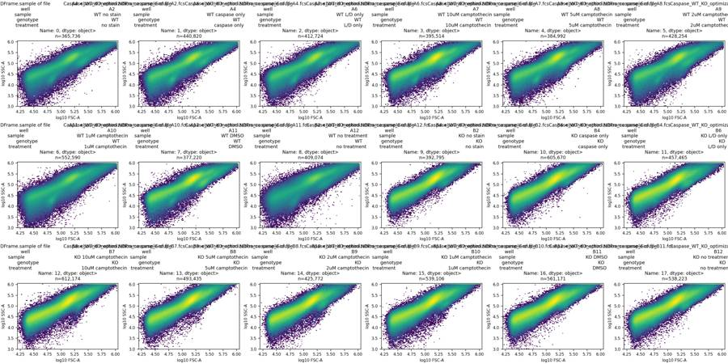
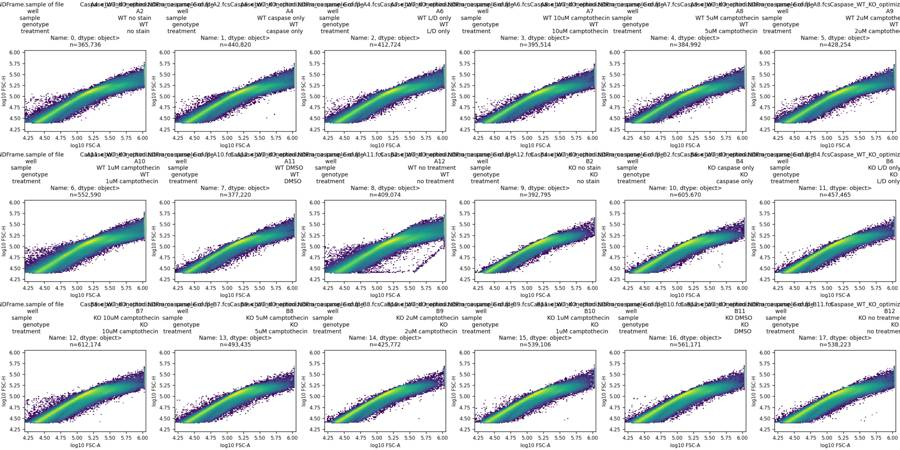
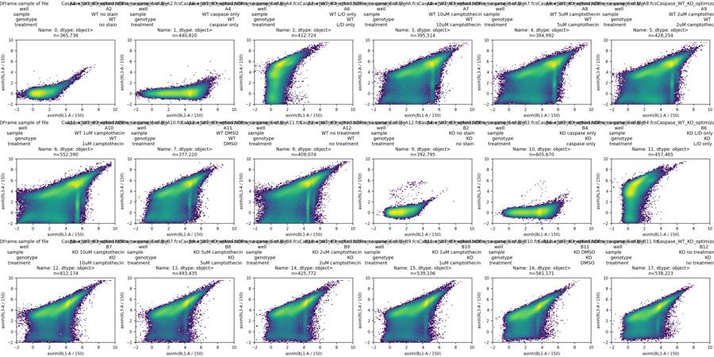
tool call · exec
for (const p of ["explore_time.png","explore_histograms.png"]) { const r=await tools.view_image({path:"/task/outputs/"+p});image(r.image_url); }
text(await tools.exec_command({cmd:"python - <<'PY'\nimport pandas as pd, flowkit as fk, numpy as np\nq=pd.read_csv('/task/outputs/time_bins.csv')\nprint(q.pivot(index='time_start_s',columns='well',values='n_events').to_string())\nfor w in ['A8','B8','A12']:\n s=fk.Sample('/task/inputs/raw/Caspase_WT_KO_optimization_caspase_Group_'+w+'.fcs');e=s.get_events(source='raw');t=e[:,0];inds=np.flatnonzero(np.diff(t)<0)\n print(w,'time decrease indices',inds,'first',e[:3,:5],'around',[(e[max(0,i-2):i+4,:5]) for i in inds])\nPY","max_output_tokens":4500}));
tool output
Script completed Wall time 0.9 seconds Output:
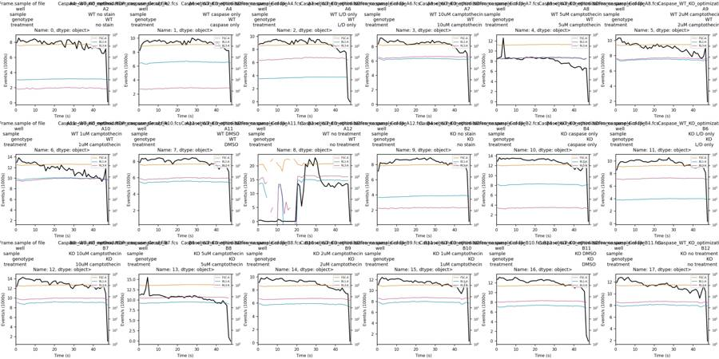
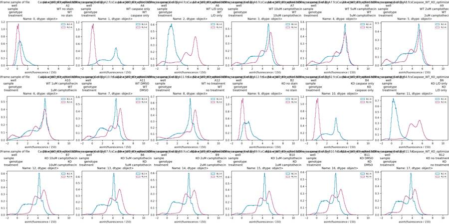
{"chunk_id":"a45685","wall_time_seconds":0.660305118,"exit_code":0,"original_token_count":2082,"output":"well A10 A11 A12 A2 A4 A6 A7 A8 A9 B10 B11 B12 B2 B4 B6 B7 B8 B9\ntime_start_s \n0 12999 7868 372 7922 8264 8788 8379 8458 10093 11073 12711 11901 7126 12916 8578 12403 11213 9129\n1 13883 8386 447 8559 9078 8908 9212 8729 10328 12028 13143 12648 8253 13619 9500 13761 11478 9827\n2 13420 8319 217 8128 9437 8876 9185 8875 10317 12446 13012 12789 8158 13290 9902 14020 11329 9681\n3 13092 8394 48 8236 9574 9118 8947 12591 9751 12156 13020 12745 8180 13480 9928 14304 12653 9682\n4 13043 8116 1 8126 9700 9163 8778 8580 9855 12253 12744 12298 8114 13331 9795 14110 15521 9932\n5 12846 8182 0 7978 9415 9245 8565 8636 9495 11883 12489 12635 8149 13516 9809 13946 11021 9718\n6 12959 8274 47 8095 9524 9207 8800 8712 9686 12090 12609 12807 8345 13374 9948 13965 11076 9581\n7 12786 8278 54 8240 9638 9437 8777 8505 9362 12129 12608 12293 8173 13480 10097 13870 11264 9451\n8 12887 8278 0 8300 9694 9488 8701 8619 9505 12112 12681 12073 8365 13534 10112 13801 11228 9568\n9 13096 8409 50 8442 9580 9550 8761 8628 9565 12128 13137 12132 8680 13460 10057 13547 11243 9699\n10 12948 8446 757 8323 9790 9345 8967 8429 9613 12211 13007 12133 8690 13467 10204 13890 11246 9663\n11 12586 8397 500 8036 9524 9399 8727 8452 9531 12151 12679 11956 8604 13454 10204 13844 11102 9782\n12 12354 8333 3 8213 9638 9203 8679 8316 9353 12011 12503 11858 8614 13476 10197 13895 10961 9743\n13 12349 7928 71 7768 9556 9200 8671 8333 9093 11745 12454 11837 8641 13261 10040 13319 10804 9443\n14 12535 8118 37 8161 9244 9055 8425 8639 8974 11750 12291 11498 8642 13169 9903 13426 10595 9336\n15 11370 8158 28 7901 9340 8864 8261 8795 9298 11803 12042 11432 8642 13099 9924 13443 10384 9416\n16 12090 8041 55 7733 9536 8790 8310 8704 8897 11693 12078 11214 8583 13061 9815 13388 10860 9464\n17 11780 7673 0 7732 9369 9298 8333 8778 9106 11752 12340 11426 8608 13087 9872 12666 10880 9399\n18 12251 8023 63 7957 9481 8811 8351 8783 8974 11497 12406 11482 8711 13220 10025 13173 10796 9389\n19 12163 8127 74 7764 9644 9470 8390 8703 9356 11855 12449 11506 8725 13035 9948 13495 10769 9283\n20 11969 8225 13660 8016 9508 9114 8509 8533 9260 11663 12422 11353 8857 13172 9947 13578 10945 9207\n21 12202 8154 12763 8074 9483 9423 8398 8671 9540 11514 12563 11424 8702 13317 10006 12940 10828 9529\n22 11610 8260 5468 8173 9049 9476 8593 8689 9210 11626 12682 11616 8712 13372 10367 13302 10868 9509\n23 12478 8374 11100 8172 9655 9302 8607 8543 9319 11537 12707 11642 8787 13379 10210 13349 10543 9317\n24 11989 8350 20605 7648 9046 9183 8532 8526 9079 11364 12431 11686 8847 13417 10148 13096 10877 9276\n25 11631 8265 19646 7320 9627 8837 8657 8618 9161 11694 12630 11661 8600 13217 10161 12993 10907 9289\n26 11443 8324 22320 8300 9359 9741 8685 8734 9325 11692 12615 11840 8763 13384 10193 12946 10974 9367\n27 11898 8473 21113 8335 10043 9343 8506 8503 9255 11677 12602 11438 8910 13179 10556 13026 10652 9336\n28 11576 8412 19989 8050 9898 9343 8899 8485 9108 11293 12371 11368 8696 12972 10144 12188 11088 9342\n29 11653 8411 22923 7739 9676 9002 8542 8443 8962 11398 12408 11081 8593 13226 10064 11965 10975 9332\n30 10447 8198 21341 8009 9895 9515 8679 8080 9282 11508 12129 11067 8433 12989 9760 12561 10670 8917\n31 10910 8014 16971 7145 9767 9504 8713 8142 9036 11282 12016 11394 8400 12803 9686 12677 10638 8877\n32 11098 8011 14588 8169 9573 9124 8669 7874 8896 11218 11837 10809 8255 12676 9828 12698 10623 8747\n33 10950 7986 13514 7948 9512 9011 8491 7506 8641 10836 11671 10773 8355 12614 9826 12742 10172 8714\n34 10471 7934 12671 7205 9535 9031 8591 7591 8513 11055 11767 10722 8165 12408 9708 12856 10196 8809\n35 11635 7819 12611 6966 9259 8914 8489 7605 8626 11142 11363 10871 8218 12431 9206 12527 10020 8674\n36 10249 7522 13756 7845 9446 8707 8386 7613 8815 11209 11528 10818 7914 12581 9318 12425 10178 8373\n37 10770 7748 12583 7181 9431 8746 8393 7672 8498 10952 11566 10529 8167 12236 9363 12075 9939 8316\n38 10307 7680 12837 7339 9197 8483 8191 7099 8156 10748 11585 10068 8180 11911 9411 12604 10007 8242\n39 10142 7836 12217 7158 9100 8640 8148 6874 7869 10893 11314 10488 8029 11777 9090 12473 9492 8129\n40 10116 7435 13143 7481 9406 8171 7823 6702 8576 10887 10915 10625 8142 11226 8918 12268 9231 8001\n41 10514 7057 13898 7226 9176 7864 7535 6840 8297 10504 11268 10774 7834 11688 8880 11806 9348 8099\
… [2,509 more characters not shown]tool call · exec
text(await tools.exec_command({cmd:"cat > /task/outputs/control_diagnostics.py <<'PY'\nimport numpy as np, pandas as pd\nimport flowkit as fk\nimport matplotlib\nmatplotlib.use('Agg')\nimport matplotlib.pyplot as plt\nfrom matplotlib.colors import LogNorm\nfrom pathlib import Path\nO=Path('/task/outputs')\nws=['A2','A4','A6','A11','A12','B2','B4','B6','B11','B12']\nfig,axs=plt.subplots(len(ws),5,figsize=(20,30),constrained_layout=True)\nstats=[]\nfor i,w in enumerate(ws):\n s=fk.Sample('/task/inputs/raw/Caspase_WT_KO_optimization_caspase_Group_'+w+'.fcs');e=s.get_events(source='raw');fsc,ssc,bl,rl,fh,sh,fw,sw=e[:,1:].T\n mask=(fsc>50000)&(ssc>20000)&(fsc<900000)&(ssc<900000)&(fsc/fh>0.85)&(fsc/fh<1.6)\n x=e[mask];n=len(x)\n ax=axs[i,0];ax.hist2d(np.log10(np.maximum(fsc,1)),fw,bins=100,range=[(4.2,6.1),(40,180)],norm=LogNorm());ax.set(xlabel='log10 FSC-A',ylabel='FSC-W',title=w+' all events')\n for j,c,y in [(1,'RL3-A',rl),(2,'BL1-A',bl)]:\n ax=axs[i,j];ax.hist2d(np.log10(fsc[mask]),np.arcsinh(y[mask]/150),bins=100,range=[(4.5,6),(-2,10)],norm=LogNorm());ax.set(xlabel='log10 FSC-A',ylabel='asinh '+c,title=w+f' tentative singlets n={n:,}')\n ax=axs[i,3];ax.hist2d(np.arcsinh(x[:,3]/150),np.arcsinh(x[:,4]/150),bins=100,range=[(-2,10),(-2,10)],norm=LogNorm());ax.set(xlabel='asinh BL1-A',ylabel='asinh RL3-A',title=w)\n ax=axs[i,4]\n for col,label in [(3,'Caspase'),(4,'Zombie')]:\n ax.hist(np.arcsinh(x[:,col]/150),bins=np.linspace(-2,10,150),density=True,histtype='step',label=label)\n ax.set(xlabel='asinh(fluorescence / 150)',title=w);ax.legend()\n row={'well':w,'tentative_singlets':n}\n for col,c in [(3,'Caspase'),(4,'Zombie')]:\n for q in [1,5,10,25,50,75,90,95,99,99.5,99.9]:row[f'{c}_p{q}']=np.percentile(x[:,col],q)\n stats.append(row)\nfig.savefig(O/'control_diagnostics.png',dpi=130)\npd.DataFrame(stats).to_csv(O/'tentative_singlet_statistics.csv',index=False)\nprint(pd.DataFrame(stats).round(1).to_string(index=False))\nPY\npython /task/outputs/control_diagnostics.py","yield_time_ms":1000,"max_output_tokens":3000}));
tool output
Script completed
Wall time 1.2 seconds
Output:
{"chunk_id":"989da2","wall_time_seconds":1.0012867,"session_id":54117,"original_token_count":0,"output":""}13
agent
A12, the WT untreated well, has a major acquisition interruption: it records no events in several early one-second intervals, then rises to roughly 20,000 events/s. I’m checking whether the recovered portion is representative. The staining controls also show that the viability threshold needs to follow the stained low/high populations, since viable cells can sit above the unstained fluorescence background.
tool call · exec
text(await tools.write_stdin({session_id:54117,chars:"","yield_time_ms":1000,"max_output_tokens":2500}));
text(await tools.web__run({search_query:[{q:'Zombie NIR fixable viability kit live cells weak staining surface amines protocol',domains:['biolegend.com']}],response_length:"short"}));
tool output
Script completed
Wall time 0.6 seconds
Output:
{"chunk_id":"b00e15","wall_time_seconds":0.00000331,"exit_code":0,"original_token_count":836,"output":"well tentative_singlets Caspase_p1 Caspase_p5 Caspase_p10 Caspase_p25 Caspase_p50 Caspase_p75 Caspase_p90 Caspase_p95 Caspase_p99 Caspase_p99.5 Caspase_p99.9 Zombie_p1 Zombie_p5 Zombie_p10 Zombie_p25 Zombie_p50 Zombie_p75 Zombie_p90 Zombie_p95 Zombie_p99 Zombie_p99.5 Zombie_p99.9\n A2 200762 -49.0 -8.0 14.0 57.0 116.0 202.0 369.0 587.0 1001.0 1173.0 1613.0 -103.0 -68.0 -49.0 -18.0 18.0 53.0 86.0 106.0 145.0 160.0 193.0\n A4 250827 79.0 331.3 565.0 1816.0 4987.0 7847.0 10421.0 13020.0 17557.7 19292.0 25549.7 -103.0 -67.0 -48.0 -17.0 18.0 53.0 86.0 107.0 146.0 162.0 194.0\n A6 236910 -27.0 20.0 47.0 101.0 172.0 266.0 417.0 619.5 1027.0 1177.0 1571.2 -328.0 -67.0 330.0 4556.0 12379.0 19085.8 25069.0 28924.5 38229.7 43167.8 55478.7\n A11 222285 97.0 330.0 556.0 2003.0 5528.0 8012.0 10524.0 13215.0 16973.0 18482.0 23955.8 -258.0 -37.0 482.0 4915.0 11915.0 18241.0 23858.0 27552.8 36951.0 41620.7 52928.2\n A12 233318 -33.0 303.0 656.0 2451.2 5232.0 7484.0 10430.3 12942.0 17251.7 19961.2 27167.7 -682.0 -239.0 267.0 5017.0 13062.0 19068.0 24797.0 28771.1 39763.1 45141.0 58280.7\n B2 250507 -7.0 38.0 67.0 129.0 224.0 342.0 552.4 892.0 1575.0 1819.0 2362.0 -100.0 -66.0 -47.0 -16.0 19.0 55.0 89.0 111.0 155.0 173.0 222.0\n B4 364064 105.0 257.0 420.0 1147.0 2589.0 3453.0 4517.0 5614.0 7537.4 8316.7 10614.9 -101.0 -66.0 -48.0 -17.0 18.0 54.0 87.0 108.0 151.0 168.0 207.0\n B6 263838 -31.0 7.0 29.0 71.0 130.0 211.0 332.0 503.0 1180.6 1418.8 1986.0 -214.0 494.0 2913.0 5870.0 11475.0 18736.0 26306.3 31817.0 44419.3 49906.7 63129.7\n B11 317636 81.0 210.0 343.0 941.0 2343.0 3186.0 4162.0 5254.0 7098.0 7924.8 10375.1 -42.0 705.0 1733.0 2965.0 5592.0 8950.2 12512.0 15081.0 21273.0 24074.0 31154.5\n B12 305668 73.0 206.0 339.0 964.0 2556.0 3520.0 4566.0 5739.0 7793.0 8722.7 11520.7 -75.0 316.0 1246.0 2385.0 4717.0 7641.0 10638.0 12760.0 17797.3 19958.0 25676.0\n"}
Blocked by robots.txt
The following domains cannot be accessed (non-retryable error): biolegend.com--------------------------------------------------------------------------------
Version: 7 Revision Date: 12/18/2024 (https://www.biolegend.com/en-us/products/zombie-nir-fixable-viability-kit-8657?displayInline=true&filename=Zombie+NIR%E2%84%A2+Fixable+Viability+Kit.pdf&leftRightMargin=15&pdf=true&topBottomMargin=15&v=20240924032357)
citeturn2search9 [wordlim: 200] Published: 1.1 years ago; Zombie NIR™ is an amine reactive fluorescent dye that is non-permeant to live cells, but ... Zombie NIR™ Fixable Viability kit is composed of lyophilized Zombie NIR™ dye and anhydrous ... Standard Cell Staining Protocol:
Version: 7 Revision Date: 12/18/2024
Zombie NIR™ Fixable Viability Kit
Catalog# / Size
423105 / 100 tests
423106 / 500 tests
Regulatory Status
RUO
Other Names
Fixable Dye, Fixable Viability Dye, Dead, Apoptosis
Description
Zombie NIR™ is an amine reactive fluorescent dye that is non-permeant to live cells, but
permeant to the cells with compromised membranes. Thus, it can be used to assess live vs.
dead status of mammalian cells. Zombie NIR™ is a polar water soluble dye, providing red
fluorescence, making it suitable for multi-color detection.
Product Details
Preparation
Zombie NIR™ Fixable Viability kit is composed of lyophilized Zombie NIR™ dye and anhydrous
DMSO. For reconstitution, bring the kit to room temperature; add 100 µl of DMSO to one vial of
Zombie NIR™ dye until fully dissolved. 100 tests = 1 vial of Zombie NIR™ + DMSO, 500 tests = 5
vials of Zombie NIR™ + DMSO.
Storage & Handling
Store kit at -20°C upon receipt. Do not open vials until needed. Once the DMSO is added to the
Zombie NIR™ dye, use immediately, or store at -20°C in a dry place and protected from light,
preferably in a desiccator or in a container with desiccant for no more than one month.
Application
FC - Quality tested
Recommended Usage
Each lot of this product is quality control tested by immunofluorescent staining with flow cytometric
analysis.
For flow cytometry, the suggested dilution is 1:100-1:1000 for 1-10 million cells. It is recommended
that the reagent be titrated for optimal performance for each application, as optimal dosage varies
with cell type.
Excitation Laser
Red Laser (633 nm)
Application Notes
Zombie NIR™ dye is excited by the red laser and has fluorescence emission maximum at 746 nm.
If using in a multi-color panel design, filter optimizatio
… [12,344 more characters not shown]tool call · exec
const r=await tools.view_image({path:"/task/outputs/control_diagnostics.png"});image(r.image_url);
tool output
Script completed Wall time 0.1 seconds Output:
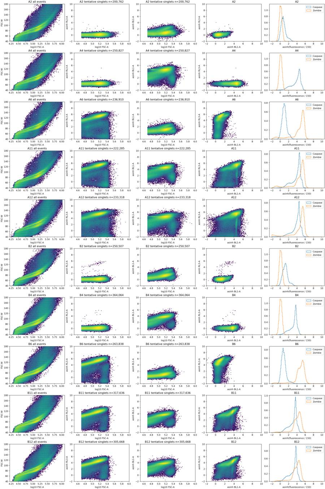
tool call · exec
text(await tools.exec_command({cmd:"python - <<'PY'\nimport numpy as np, pandas as pd, flowkit as fk\nlayout=pd.read_csv('/task/inputs/plate_layout.csv');rows=[]\nfor r in layout.itertuples():\n s=fk.Sample('/task/inputs/raw/'+r.file);e=s.get_events(source='raw');t,fsc,ssc,bl,rl,fh,sh,fw,sw=e.T\n cells=(t>=5)&(t<45)&(fsc>50000)&(ssc>20000)&(fsc<900000)&(ssc<900000)\n sing=cells&(fsc/fh>.85)&(fsc/fh<1.6)\n row={'well':r.well,'treatment':r.treatment,'cells%':100*cells.mean(),'singlets%':100*sing.sum()/cells.sum()}\n for cut in [300,500,1000,1500,2000,3000,5000,8000]:\n live=sing&(rl<cut)\n row[f'live%_{cut}']=100*live.sum()/sing.sum();row[f'casp%_{cut}']=100*(live&(bl>=1500)).sum()/live.sum();row[f'medianBL_{cut}']=np.median(bl[live])\n rows.append(row)\ndf=pd.DataFrame(rows);df.to_csv('/task/outputs/threshold_exploration.csv',index=False);print(df.round(2).to_string(index=False))\nPY","yield_time_ms":1000,"max_output_tokens":4000}));
tool output
Script completed
Wall time 1.2 seconds
Output:
{"chunk_id":"5dfceb","wall_time_seconds":1.00120902,"session_id":46117,"original_token_count":0,"output":""}tool call · exec
text(await tools.write_stdin({session_id:46117,chars:"","yield_time_ms":1000,"max_output_tokens":5500}));
text(await tools.exec_command({cmd:"python - <<'PY'\nimport pandas as pd\nq=pd.read_csv('/task/outputs/channel_quantiles.csv'); print(q[q.channel.isin(['FSC-A','SSC-A','FSC-H','FSC-W'])][['well','channel','q1','q25','q50','q75','q99']].head(24).to_string(index=False))\nPY","max_output_tokens":1500}));
tool output
Script completed
Wall time 0.2 seconds
Output:
{"chunk_id":"3a8e74","wall_time_seconds":0.00000327,"exit_code":0,"original_token_count":1653,"output":"well treatment cells% singlets% live%_300 casp%_300 medianBL_300 live%_500 casp%_500 medianBL_500 live%_1000 casp%_1000 medianBL_1000 live%_1500 casp%_1500 medianBL_1500 live%_2000 casp%_2000 medianBL_2000 live%_3000 casp%_3000 medianBL_3000 live%_5000 casp%_5000 medianBL_5000 live%_8000 casp%_8000 medianBL_8000\n A2 no stain 62.53 74.28 100.00 0.14 116.0 100.00 0.14 116.0 100.00 0.14 116.0 100.00 0.14 116.0 100.00 0.14 116.0 100.00 0.14 116.0 100.00 0.14 116.0 100.00 0.14 116.0\n A4 caspase only 63.50 76.41 100.00 77.98 4972.0 100.00 77.98 4972.0 100.00 77.98 4972.0 100.00 77.98 4972.0 100.00 77.98 4972.0 100.00 77.98 4972.0 100.00 77.98 4972.0 100.00 77.98 4972.0\n A6 L/D only 64.21 77.47 9.64 0.19 67.0 11.35 0.16 71.0 14.30 0.14 77.0 15.92 0.13 80.0 17.11 0.12 82.0 19.46 0.11 84.0 26.51 0.08 88.0 36.34 0.06 97.0\n A7 10uM camptothecin 65.10 79.10 6.74 50.15 1505.0 7.75 51.82 1586.5 9.64 55.19 1780.0 10.72 56.47 1863.0 11.58 57.22 1919.0 13.27 57.10 1929.0 19.26 54.65 1809.5 30.31 59.30 2157.0\n A8 5uM camptothecin 64.33 80.42 9.72 58.17 1857.0 11.19 59.95 1968.0 13.64 62.83 2191.0 15.06 64.11 2288.0 16.10 64.67 2354.0 18.13 64.03 2362.0 24.40 61.59 2281.0 34.61 65.62 2663.0\n A9 2uM camptothecin 62.44 77.77 11.88 57.18 1813.0 13.26 58.16 1871.0 15.69 60.40 2018.0 17.14 61.44 2091.0 18.20 61.80 2123.0 20.33 60.96 2101.0 26.52 57.60 1946.0 36.42 60.81 2160.0\n A10 1uM camptothecin 61.27 74.06 11.95 55.86 1852.0 14.12 58.80 2087.0 17.24 61.78 2394.0 19.15 62.69 2493.5 20.74 62.74 2519.0 24.43 60.39 2338.0 33.03 58.98 2169.0 43.44 64.55 2694.0\n A11 DMSO 64.24 77.81 8.70 29.25 592.0 10.10 32.13 658.0 12.50 36.29 778.0 13.90 38.18 849.0 14.92 38.84 881.0 17.36 38.24 858.0 25.28 38.51 909.0 36.27 45.88 1272.0\n A12 no treatment 72.99 72.99 10.36 44.41 1142.0 11.83 46.91 1281.0 14.42 50.23 1513.0 16.09 51.59 1624.0 17.27 51.98 1662.0 19.45 51.01 1580.0 24.76 48.50 1395.0 32.70 51.53 1591.0\n B2 no stain 65.18 83.83 99.96 1.25 228.0 99.97 1.25 228.0 99.97 1.25 228.0 99.97 1.25 228.0 99.97 1.25 228.0 99.97 1.25 228.0 99.98 1.25 228.0 99.98 1.25 228.0\n B4 caspase only 64.21 78.98 99.99 69.59 2596.0 100.00 69.59 2596.0 100.00 69.59 2596.0 100.00 69.59 2596.0 100.00 69.59 2596.0 100.00 69.59 2596.0 100.00 69.59 2596.0 100.00 69.59 2596.0\n B6 L/D only 60.65 81.40 4.17 0.03 63.0 5.02 0.04 64.0 6.52 0.03 68.0 7.57 0.05 70.0 8.38 0.04 71.0 10.23 0.03 72.0 19.58 0.02 69.0 35.96 0.01 73.0\n B7 10uM camptothecin 61.60 78.09 2.67 47.02 1324.0 3.27 46.81 1312.5 4.37 45.76 1256.0 5.34 44.52 1196.0 6.49 41.37 1055.0 10.96 35.32 854.0 26.34 37.58 1002.0 44.34 50.53 1524.0\n B8 5uM camptothecin 62.79 80.91 1.88 44.90 1226.0 2.33 44.15 1198.0 3.16 43.07 1150.0 3.82 41.65 1094.5 4.52 39.49 994.0 7.20 31.60 723.5 19.31 29.41 756.0 35.38 41.28 1149.0\n B9 2uM camptothecin 59.75 83.95 3.84 42.97 1079.0 4.61 42.67 1074.0 5.91 42.30 1059.5 6.83 42.16 1045.0 7.68 41.11 981.0 10.48 35.93 776.0 23.47 33.43 809.0 40.96 43.03 1188.0\n B10 1uM camptothecin 60.91 80.72 3.48 38.35 930.0 4.24 38.76 944.0 5.55 40.21 1004.0 6.54 40.53 1011.5 7.40 39.85 980.0 10.09 36.54
… [2,442 more characters not shown]17
agent
A12’s recovery follows about 20 seconds of disrupted flow, so I’ll exclude it from condition summaries and retain its gated counts for audit. The preliminary shared gates show lower caspase positivity in KO than WT, and a camptothecin response in both genotypes. I’m testing that direction across plausible fluorescence thresholds because the viable fraction is small and the live/dead boundary is not fully validated.
tool call · exec
text(await tools.exec_command({cmd:"cat > /task/outputs/analyse_plate.py <<'PY'\n\"\"\"Reproduce this plate analysis using FlowKit 1.2.3. Inputs are never modified.\"\"\"\nfrom pathlib import Path\nimport json, hashlib\nimport numpy as np\nimport pandas as pd\nimport flowkit as fk\n\nINPUT=Path('/task/inputs'); OUTPUT=Path('/task/outputs')\nTIME_MIN,TIME_MAX=5.,45.\nFSC_MIN,SSC_MIN,SCATTER_MAX=50000.,20000.,900000.\nAH_MIN,AH_MAX=0.85,1.60\nLIVE_MAX=1000.\nCASPASE_MIN=2000.\nPOPULATIONS=[\n ('stable_time','other','all_events'),\n ('cells','cells','stable_time'),\n ('singlets','singlets','cells'),\n ('live','live','singlets'),\n ('caspase_positive','marker_positive','live'),\n ('nonviable','other','singlets'),\n ('caspase_positive_nonviable','other','nonviable'),\n ('caspase_positive_singlets','other','singlets')]\n\ndef dim(channel,lo=None,hi=None):\n return fk.Dimension(channel,compensation_ref='uncompensated',range_min=lo,range_max=hi)\n\ndef make_strategy():\n st=fk.GatingStrategy()\n st.add_gate(fk.gates.RectangleGate('stable_time',[dim('Time',TIME_MIN,TIME_MAX)]),('root',))\n st.add_gate(fk.gates.RectangleGate('cells',[dim('FSC-A',FSC_MIN,SCATTER_MAX),dim('SSC-A',SSC_MIN,SCATTER_MAX)]),('root','stable_time'))\n # X = FSC-A, Y = FSC-H. A/H bounded by 0.85 and 1.60.\n # Y endpoints lie outside the instrument's data range; cells supplies the scatter bounds.\n st.add_gate(fk.gates.PolygonGate('singlets',[dim('FSC-A'),dim('FSC-H')],vertices=[(0,0),(AH_MIN*2e6,2e6),(AH_MAX*2e6,2e6)]),('root','stable_time','cells'))\n parent=('root','stable_time','cells','singlets')\n st.add_gate(fk.gates.RectangleGate('live',[dim('RL3-A',None,LIVE_MAX)]),parent)\n st.add_gate(fk.gates.RectangleGate('caspase_positive',[dim('BL1-A',CASPASE_MIN,None)]),parent+('live',))\n st.add_gate(fk.gates.RectangleGate('nonviable',[dim('RL3-A',LIVE_MAX,None)]),parent)\n st.add_gate(fk.gates.RectangleGate('caspase_positive_nonviable',[dim('BL1-A',CASPASE_MIN,None)]),parent+('nonviable',))\n st.add_gate(fk.gates.RectangleGate('caspase_positive_singlets',[dim('BL1-A',CASPASE_MIN,None)]),parent)\n return st\n\ndef run():\n assert fk.__version__=='1.2.3'\n layout=pd.read_csv(INPUT/'plate_layout.csv')\n st=make_strategy()\n with (OUTPUT/'gates.xml').open('wb') as f:fk.export_gatingml(st,f)\n saved=fk.parse_gating_xml(str(OUTPUT/'gates.xml'))\n counts=[];qc=[];metrics=[];sensitivity=[];time_rows=[];provenance=[]\n for r in layout.itertuples(index=False):\n path=INPUT/'raw'/r.file;s=fk.Sample(str(path));e=s.get_events(source='raw');t,fsc,ssc,bl,rl,fh,sh,fw,sw=e.T\n res=saved.gate_sample(s);original=st.gate_sample(s)\n masks={pop:res.get_gate_membership(pop) for pop,_,_ in POPULATIONS}\n ns={'all_events':int(s.event_count),**{pop:int(res.get_gate_count(pop)) for pop,_,_ in POPULATIONS}}\n assert all(ns[pop]==int(original.get_gate_count(pop)) for pop,_,_ in POPULATIONS)\n assert np.array_equal(masks['caspase_positive_singlets'],masks['caspase_positive']|masks['caspase_positive_nonviable'])\n assert np.array_equal(masks['singlets'],masks['live']|masks['nonviable'])\n counts.append(dict(file=r.file,well=r.well,population='all_events',role='other',parent='none',count=ns['all_events'],pct_of_parent=np.nan))\n for pop,role,par in POPULATIONS:\n counts.append(dict(file=r.file,well=r.well,population=pop,role=role,parent=par,count=ns[pop],pct_of_parent=100*ns[pop]/ns[par] if ns[par] else np.nan))\n m=dict(file=r.file,well=r.well,genotype=r.genotype,treatment=r.treatment,\n caspase_positive_live_pct=100*ns['caspase_positive']/ns['live'],live_singlets_pct=100*ns['live']/ns['singlets'],\n caspase_positive_singlets_pct=100*ns['caspase_positive_singlets']/ns['singlets'],\n caspase_positive_nonviable_pct=100*ns['caspase_positive_nonviable']/ns['nonviable'] if ns['nonviable'] else np.nan,\n live_BL1_median=float(np.median(bl[masks['live']])),singlet_BL1_median=float(np.median(bl[masks['singlets']])),\n live_count=ns['live'],singlet_count=ns['singlets'])\n metrics.append(m)\n rates,_=np.histogram(t,bins=np.arange(0,49));core=rates[5:45]\n q=dict(file=r.file,well=r.well,all_events=s.event_count,time_start_s=float(t.min()),time_end_s=float(t.max()),time_reversals=int(np.sum(np.diff(t)<0)),\n max_gap_s=float(np.max(np.diff(np.sort(t)))),n_0_to_20_s=int(np.sum(t<20)),n_20_to_45_s=int(np.sum((t>=20)&(t<45))),\n rate_0_to_20_s=float(np.sum(t<20)/20),rate_20_to_45_s=float(np.sum((t>=20)&(t<45))/25),\n core_1s_rate_min=int(core.min()),core_1s_rate_max=int(core.max()),core_1s_rate_cv=float(core.std(ddof=1)/core.mean()),\n stable_time_count=ns['stable_time'],cells_count=ns['cells'],singlets_count=ns['singlets'],live_count=ns['live'],\n caspase_positive_count=ns['caspase_positive'],cells_pct_of_stable=100*ns['cells']/ns['stable_time'],\n singlets_pct_of_cells=100*ns['singlets']/ns['cells'],live_pct_of_singlets=m['live_singlets_pct'],\n coincident_count=int(s.metadata.get('#coincidentcount',0)),flowrate_ul_per_min=float(s.metadata['#flowrate']))\n for j,c in enumerate(s.pnn_labels):\n q[c+'_saturated_count']=int(np.sum(e[:,j]>=float(s.metadata[f'p{j+1}r'])-1))\n if c in ('BL1-A','RL3-A'):\n q[c+'_saturated_live_count']=int(np.sum(masks['live']&(e[:,j]>=float(s.metadata[f'p{j+1}r'])-1)))\n for ch,v in [('BL1-A',bl),('RL3-A',rl)]:\n for quant in [50,99,99.5,99.9]:q[f'{ch}_singlets_q{quant}']=float(np.percentile(v[masks['singlets']],quant))\n qc.append(q)\n # Sensitivity analyses use the same alternative cuts for all wells. They do not change saved gates/counts.\n for sc_lo in [40000.,50000.,70000.]:\n for ah_max in [1.4,1.6,1.8]:\n sm=(t>=5)&(t<45)&(fsc>=sc_lo)&(fsc<9e5)&(ssc>=2e4)&(ssc<9e5)&(fsc>=.85*fh)&(fsc<=ah_max*fh)\n for live_max in [500.,1000.,2000.]:\n lm=sm&(rl<live_max)\n for casp_min in [1500.,2000.,3000.]:\n sensitivity.append(dict(well=r.well,genotype=r.genotype,treatment=r.treatment,FSC_min=sc_lo,AH_max=ah_max,RL3_max=live_max,BL1_min=ca
… [1,833 more characters not shown]tool output
Script completed
Wall time 1.2 seconds
Output:
{"chunk_id":"3ffea7","wall_time_seconds":1.00109171,"session_id":25465,"original_token_count":63,"output":"A2 {'caspase_positive_live_pct': 0.024, 'live_singlets_pct': 99.999, 'caspase_positive_singlets_pct': 0.024, 'caspase_positive_nonviable_pct': 0.0, 'live_BL1_median': 116.0, 'singlet_BL1_median': 116.0, 'live_count': 169866, 'singlet_count': 169868}\n"}tool call · exec
text(await tools.write_stdin({session_id:25465,chars:"","yield_time_ms":1000,"max_output_tokens":4000}));
text(await tools.exec_command({cmd:"python - <<'PY'\nfrom pathlib import Path\np=Path('/task/outputs/explore_plate.py')\ns=p.read_text().replace('r.sample', \"r['sample']\")\ns=s.replace(\"f'{r.well} {r['sample']}\\\\nn={s.event_count:,}'\", 'f\"{r.well} {r[\\'sample\\']}\\\\nn={s.event_count:,}\"')\ns=s.replace(\"f'{r.well} {r['sample']}'\", 'f\"{r.well} {r[\\'sample\\']}\"')\np.write_text(s)\nPY\npython /task/outputs/explore_plate.py > /task/outputs/exploration_log.txt","yield_time_ms":1000,"max_output_tokens":500}));
tool output
Script completed
Wall time 1.2 seconds
Output:
{"chunk_id":"0e8d32","wall_time_seconds":0.00000332,"exit_code":0,"original_token_count":1094,"output":"A4 {'caspase_positive_live_pct': 73.599, 'live_singlets_pct': 100.0, 'caspase_positive_singlets_pct': 73.599, 'caspase_positive_nonviable_pct': 100.0, 'live_BL1_median': 4972.0, 'singlet_BL1_median': 4972.0, 'live_count': 213897, 'singlet_count': 213898}\nA6 {'caspase_positive_live_pct': 0.095, 'live_singlets_pct': 14.296, 'caspase_positive_singlets_pct': 0.03, 'caspase_positive_nonviable_pct': 0.019, 'live_BL1_median': 77.0, 'singlet_BL1_median': 175.0, 'live_count': 29349, 'singlet_count': 205291}\nA7 {'caspase_positive_live_pct': 46.207, 'live_singlets_pct': 9.637, 'caspase_positive_singlets_pct': 82.86, 'caspase_positive_nonviable_pct': 86.769, 'live_BL1_median': 1780.0, 'singlet_BL1_median': 9108.0, 'live_count': 19627, 'singlet_count': 203673}\nA8 {'caspase_positive_live_pct': 53.1, 'live_singlets_pct': 13.644, 'caspase_positive_singlets_pct': 84.032, 'caspase_positive_nonviable_pct': 88.919, 'live_BL1_median': 2191.0, 'singlet_BL1_median': 11372.0, 'live_count': 27175, 'singlet_count': 199177}\nA9 {'caspase_positive_live_pct': 50.397, 'live_singlets_pct': 15.694, 'caspase_positive_singlets_pct': 80.983, 'caspase_positive_nonviable_pct': 86.677, 'live_BL1_median': 2018.0, 'singlet_BL1_median': 8794.0, 'live_count': 32637, 'singlet_count': 207952}\nA10 {'caspase_positive_live_pct': 54.594, 'live_singlets_pct': 17.241, 'caspase_positive_singlets_pct': 80.863, 'caspase_positive_nonviable_pct': 86.335, 'live_BL1_median': 2394.0, 'singlet_BL1_median': 9225.0, 'live_count': 43237, 'singlet_count': 250774}\nA11 {'caspase_positive_live_pct': 29.852, 'live_singlets_pct': 12.498, 'caspase_positive_singlets_pct': 75.165, 'caspase_positive_nonviable_pct': 81.637, 'live_BL1_median': 778.0, 'singlet_BL1_median': 5533.0, 'live_count': 23566, 'singlet_count': 188560}\nA12 {'caspase_positive_live_pct': 44.324, 'live_singlets_pct': 14.419, 'caspase_positive_singlets_pct': 78.757, 'caspase_positive_nonviable_pct': 84.559, 'live_BL1_median': 1513.0, 'singlet_BL1_median': 5260.0, 'live_count': 31421, 'singlet_count': 217913}\nB2 {'caspase_positive_live_pct': 0.292, 'live_singlets_pct': 99.97, 'caspase_positive_singlets_pct': 0.297, 'caspase_positive_nonviable_pct': 17.188, 'live_BL1_median': 228.0, 'singlet_BL1_median': 228.0, 'live_count': 214559, 'singlet_count': 214623}\nB4 {'caspase_positive_live_pct': 61.992, 'live_singlets_pct': 99.997, 'caspase_positive_singlets_pct': 61.992, 'caspase_positive_nonviable_pct': 55.556, 'live_BL1_median': 2596.0, 'singlet_BL1_median': 2596.0, 'live_count': 307174, 'singlet_count': 307183}\nB6 {'caspase_positive_live_pct': 0.034, 'live_singlets_pct': 6.523, 'caspase_positive_singlets_pct': 0.104, 'caspase_positive_nonviable_pct': 0.109, 'live_BL1_median': 68.0, 'singlet_BL1_median': 131.0, 'live_count': 14734, 'singlet_count': 225861}\nB7 {'caspase_positive_live_pct': 39.127, 'live_singlets_pct': 4.366, 'caspase_positive_singlets_pct': 71.424, 'caspase_positive_nonviable_pct': 72.899, 'live_BL1_median': 1256.0, 'singlet_BL1_median': 4134.0, 'live_count': 12858, 'singlet_count': 294493}\nB8 {'caspase_positive_live_pct': 35.976, 'live_singlets_pct': 3.164, 'caspase_positive_singlets_pct': 71.396, 'caspase_positive_nonviable_pct': 72.554, 'live_BL1_median': 1150.0, 'singlet_BL1_median': 4027.0, 'live_count': 7933, 'singlet_count': 250702}\nB9 {'caspase_positive_live_pct': 36.444, 'live_singlets_pct': 5.907, 'caspase_positive_singlets_pct': 68.674, 'caspase_positive_nonviable_pct': 70.698, 'live_BL1_median': 1059.5, 'singlet_BL1_median': 3914.0, 'live_count': 12614, 'singlet_count': 213548}\nB10 {'caspase_positive_live_pct': 33.494, 'live_singlets_pct': 5.549, 'caspase_positive_singlets_pct': 73.242, 'caspase_positive_nonviable_pct': 75.577, 'live_BL1_median': 1003.0, 'singlet_BL1_median': 4922.0, 'live_count': 14710, 'singlet_count': 265074}\nB11 {'caspase_positive_live_pct': 19.127, 'live_singlets_pct': 5.93, 'caspase_positive_singlets_pct': 56.707, 'caspase_positive_nonviable_pct': 59.076, 'live_BL1_median': 508.0, 'singlet_BL1_median': 2346.0, 'live_count': 16265, 'singlet_count': 274294}\nB12 {'caspase_positive_live_pct': 21.869, 'live_singlets_pct': 8.439, 'caspase_positive_singlets_pct': 58.917, 'caspase_positive_nonviable_pct': 62.332, 'live_BL1_median': 485.0, 'singlet_BL1_median': 2555.0, 'live_count': 21578, 'singlet_count': 255697}\nSaved GatingML round-trip verified for all wells.\n"}
{"chunk_id":"3ac7d2","wall_time_seconds":1.000556999,"session_id":68326,"original_token_count":0,"output":""}tool call · exec
text(await tools.exec_command({cmd:"python - <<'PY'\nimport pandas as pd,numpy as np\nm=pd.read_csv('/task/outputs/well_metrics.csv');q=pd.read_csv('/task/outputs/qc_metrics.csv');t=pd.read_csv('/task/outputs/gated_time_bins.csv');s=pd.read_csv('/task/outputs/gate_sensitivity.csv')\nprint(q[['well','core_1s_rate_min','core_1s_rate_max','core_1s_rate_cv','max_gap_s','rate_0_to_20_s','rate_20_to_45_s','BL1-A_saturated_count','RL3-A_saturated_count','BL1-A_singlets_q99.5','RL3-A_singlets_q99.9']].round(3).to_string(index=False))\nprint('Five-second primary metric range:')\nprint(t[(t.start_s>=5)&(t.end_s<=45)].groupby('well')[['caspase_positive_live_pct','live_singlets_pct']].agg(['min','max']).round(2).to_string())\ncols=['FSC_min','AH_max','RL3_max','BL1_min']\nfor a,b in [('A11','B11'),('A10','B10'),('A9','B9'),('A8','B8'),('A7','B7')]:\n ab=s[s.well==a].merge(s[s.well==b],on=cols,suffixes=('_wt','_ko'));d=ab.caspase_positive_live_pct_ko-ab.caspase_positive_live_pct_wt\n print(a,b,'KO-WT sensitivity',d.min(),d.max(),'n lower',(d<0).sum(),'of',len(d))\nfor a,b in [('A11','A10'),('A11','A9'),('A11','A8'),('A11','A7'),('B11','B10'),('B11','B9'),('B11','B8'),('B11','B7')]:\n ab=s[s.well==a].merge(s[s.well==b],on=cols,suffixes=('_base','_dose'));d=ab.caspase_positive_live_pct_dose-ab.caspase_positive_live_pct_base\n print(a,b,'dose-base sensitivity',d.min(),d.max(),'n higher',(d>0).sum(),'of',len(d))\nPY","max_output_tokens":5000}));
tool output
Script completed
Wall time 0.2 seconds
Output:
{"chunk_id":"6fcb8f","wall_time_seconds":0.073576116,"exit_code":0,"original_token_count":1526,"output":"well core_1s_rate_min core_1s_rate_max core_1s_rate_cv max_gap_s rate_0_to_20_s rate_20_to_45_s BL1-A_saturated_count RL3-A_saturated_count BL1-A_singlets_q99.5 RL3-A_singlets_q99.9\n A2 6544 8442 0.060 0.056 8080.70 7614.64 0 0 1176.000 192.000\n A4 8449 10043 0.035 0.052 9451.30 9378.00 0 0 19222.515 195.000\n A6 7515 9741 0.060 0.020 9160.75 8856.72 0 8 1190.000 55510.920\n A7 7127 8967 0.054 0.016 8660.95 8298.88 1 1 31138.000 64955.440\n A8 6222 8795 0.089 0.016 8813.25 7816.92 5 5 41617.400 57634.256\n A9 7638 9686 0.058 0.018 9507.60 8767.44 1 7 34203.735 57620.392\n A10 9391 13096 0.087 0.037 12671.85 11020.40 30 4 37175.835 46952.583\n A11 7057 8473 0.044 0.013 8187.40 7952.36 0 0 18489.410 53193.814\n A12 0 22923 0.851 1.745 141.20 15169.64 1 4 20034.400 58359.816\n B2 7834 8910 0.037 0.006 8400.15 8373.20 0 0 1823.890 223.000\n B4 10957 13534 0.057 0.004 13316.45 12544.28 0 0 8293.090 207.000\n B6 8880 10556 0.043 0.006 9892.90 9690.00 0 3 1426.700 62953.840\n B7 11806 13965 0.049 0.014 13613.30 12620.92 0 28 13323.080 48064.604\n B8 9156 11264 0.058 0.016 11321.15 10295.60 0 19 12707.495 55375.681\n B9 7831 9782 0.064 0.006 9559.30 8777.60 0 10 13166.530 53981.667\n B10 9447 12211 0.055 0.008 11938.30 11091.04 0 4 15504.270 55102.905\n B11 10702 13137 0.050 0.005 12620.15 11895.32 0 1 7906.000 31349.414\n B12 9237 12807 0.063 0.014 12033.15 10959.32 0 0 8696.520 25837.912\nFive-second primary metric range:\n caspase_positive_live_pct live_singlets_pct \n min max min max\nwell \nA10 52.76 56.33 16.59 17.84\nA11 28.86 31.59 11.97 12.72\nA12 0.00 50.00 13.57 100.00\nA2 0.00 0.04 99.99 100.00\nA4 71.82 74.52 100.00 100.00\nA6 0.00 0.17 13.80 14.95\nA7 45.29 47.43 9.14 10.08\nA8 52.39 54.09 12.70 14.26\nA9 48.75 52.40 15.27 16.34\nB10 32.48 35.09 5.23 5.81\nB11 17.83 20.28 5.67 6.26\nB12 21.21 23.27 8.08 8.66\nB2 0.23 0.36 99.95 99.99\nB4 59.05 63.43 99.99 100.00\nB6 0.00 0.11 6.19 6.90\nB7 37.78 40.58 4.26 4.52\nB8 34.77 38.21 2.98 3.47\nB9 33.98 38.81 5.59 6.17\nA11 B11 KO-WT sensitivity -34.25944877251003 -2.1717371073969787 n lower 81 of 81\nA10 B10 KO-WT sensitivity -26.079239600653985 -10.88445576782793 n lower 81 of 81\nA9 B9 KO-WT sensitivity -26.36364535153205 0.5974384590789441 n lower 79 of 81\nA8 B8 KO-WT sensitivity -34.77384898148698 2.594896173589845 n lower 79 of 81\nA7 B7 KO-WT sensitivity -27.00222314255407 13.153553138001609 n lower 58 of 81\nA11 A10 dose-base sensitivity 11.420064202834304 31.215459582879557 n higher 81 of 81\nA11 A9 dose-base sensitivity 1.8423479186803178 31.12305696887636 n higher 81 of 81\nA11 A8 dose-base sensitivity 5.977520749226173 32.3569673874907 n higher 81 of 81\nA11 A7 dose-base sensitivity 3.5634677248406774 22.616428427155544 n higher 81 of 81\nB11 B10 dose-base sensitivity 10.6
… [313 more characters not shown]tool call · exec
text(await tools.exec_command({cmd:"python - <<'PY'\nimport pandas as pd\ns=pd.read_csv('/task/outputs/gate_sensitivity.csv');s=s[(s.FSC_min==50000)&(s.AH_max==1.6)]\nfor a,b in [('A11','B11'),('A10','B10'),('A9','B9'),('A8','B8'),('A7','B7')]:\n ab=s[s.well==a].merge(s[s.well==b],on=['RL3_max','BL1_min'],suffixes=('_a','_b'));d=ab.caspase_positive_live_pct_b-ab.caspase_positive_live_pct_a\n print(a,b,d.min(),d.max(),sum(d<0),len(d))\nPY","max_output_tokens":1000}));
text(await tools.exec_command({cmd:"python - <<'PY'\nimport flowkit as fk,numpy as np\nfor w in ['A8','B8']:\n s=fk.Sample('/task/inputs/raw/Caspase_WT_KO_optimization_caspase_Group_'+w+'.fcs');e=s.get_events(source='raw');n=np.flatnonzero(np.diff(e[:,0])<0)[0]+1\n print(w,'leading block',n,'fraction',n/len(e),'unique full event count',len(np.unique(e,axis=0)),'duplicate surplus',len(e)-len(np.unique(e,axis=0)))\n print('core time is monotone?',np.all(np.diff(e[(e[:,0]>=5)&(e[:,0]<45),0])>=0))\nPY","max_output_tokens":1000}));
tool output
Script completed
Wall time 1.9 seconds
Output:
{"chunk_id":"b23988","wall_time_seconds":0.057562124,"exit_code":0,"original_token_count":62,"output":"A11 B11 -22.84692939510472 -8.030354748826714 9 9\nA10 B10 -22.891110736158275 -17.429206105467777 9 9\nA9 B9 -20.69243331731048 -3.4206387398588696 9 9\nA8 B8 -25.17511898651388 -6.474714156117656 9 9\nA7 B7 -15.85351611824931 2.9530085861687922 8 9\n"}
{"chunk_id":"a1c48a","wall_time_seconds":1.55987405,"exit_code":0,"original_token_count":66,"output":"A8 leading block 3979 fraction 0.010335279694123515 unique full event count 384992 duplicate surplus 0\ncore time is monotone? True\nB8 leading block 5809 fraction 0.01177257389524456 unique full event count 493435 duplicate surplus 0\ncore time is monotone? True\n"}21
agent
The saved gates now reproduce the counts exactly after reloading the GatingML file. In DMSO, 29.9% of WT and 19.1% of KO Zombie-low singlets are caspase-positive. Camptothecin increases that fraction in both genotypes. Only 3.2–17.2% of singlets in the retained stained experimental wells meet the provisional live gate, so viability validation is the main limitation before using this assay to assess rescue.
tool call · exec
text(await tools.exec_command({cmd:"python - <<'PY'\nimport pandas as pd\nq=pd.read_csv('/task/outputs/qc_metrics.csv'); print(q[['well','BL1-A_saturated_live_count','RL3-A_saturated_live_count']].to_string(index=False))\ns=pd.read_csv('/task/outputs/gate_sensitivity.csv');s=s[(s.FSC_min==50000)&(s.AH_max==1.6)&(s.BL1_min==2000)]; print(s[s.well.isin(['A11','B11','A7','B7'])][['well','RL3_max','caspase_positive_live_pct','live_singlets_pct']].round(3).to_string(index=False))\nPY","max_output_tokens":1600}));
text(await tools.write_stdin({session_id:68326,chars:"","yield_time_ms":1000,"max_output_tokens":500}));
tool output
Script completed
Wall time 0.2 seconds
Output:
{"chunk_id":"dc1221","wall_time_seconds":0.049027697,"exit_code":0,"original_token_count":485,"output":"well BL1-A_saturated_live_count RL3-A_saturated_live_count\n A2 0 0\n A4 0 0\n A6 0 0\n A7 0 0\n A8 0 0\n A9 0 0\n A10 0 0\n A11 0 0\n A12 0 0\n B2 0 0\n B4 0 0\n B6 0 0\n B7 0 0\n B8 0 0\n B9 0 0\n B10 0 0\n B11 0 0\n B12 0 0\nwell RL3_max caspase_positive_live_pct live_singlets_pct\n A7 500.0 42.156 7.746\n A7 1000.0 46.207 9.637\n A7 2000.0 48.737 11.580\n A11 500.0 25.378 10.104\n A11 1000.0 29.852 12.498\n A11 2000.0 32.698 14.925\n B7 500.0 40.370 3.267\n B7 1000.0 39.127 4.366\n B7 2000.0 35.123 6.494\n B11 500.0 17.348 4.203\n B11 1000.0 19.127 5.930\n B11 2000.0 12.161 12.600\n"}
{"chunk_id":"ec0ba1","wall_time_seconds":0.00000142,"exit_code":0,"original_token_count":0,"output":""}tool call · exec
text(await tools.exec_command({cmd:"cat > /task/outputs/make_outputs.py <<'PY'\n\"\"\"Create presentation and machine-readable outputs from analyse_plate.py results.\"\"\"\nfrom pathlib import Path\nimport json\nimport numpy as np\nimport pandas as pd\nimport matplotlib\nmatplotlib.use('Agg')\nimport matplotlib.pyplot as plt\nfrom matplotlib.colors import LogNorm\nimport flowkit as fk\nfrom analyse_plate import POPULATIONS\nO=Path('/task/outputs'); layout=pd.read_csv('/task/inputs/plate_layout.csv'); m=pd.read_csv(O/'well_metrics.csv').set_index('well');q=pd.read_csv(O/'qc_metrics.csv').set_index('well')\nexcluded=['A12'];controls=['no stain','caspase only','L/D only']\nMETRICS=[('caspase_live_pct','caspase_positive_live_pct','100 * caspase_positive / live'),\n ('live_singlets_pct','live_singlets_pct','100 * live / singlets'),\n ('caspase_singlets_pct','caspase_positive_singlets_pct','100 * caspase_positive_singlets / singlets')]\n\ndef cond(w,metric='caspase_live_pct'):\n r=m.loc[w]; t={'no stain':'unstained_control','caspase only':'caspase_only_control','L/D only':'Zombie_only_control','no treatment':'untreated','DMSO':'DMSO'}.get(r.treatment,r.treatment.replace(' camptothecin','_camptothecin'))\n return f'{r.genotype}_{t}__{metric}'\n\nflags=[]\nfor r in layout.itertuples(index=False):\n z=q.loc[r.well];v=m.loc[r.well]\n if r.well=='A12':\n issue='clog';decision='exclude';evidence=(f'Acquisition obstruction/unstable recovery: 0-20 s rate {z.rate_0_to_20_s:.1f} events/s versus {z.rate_20_to_45_s:.1f} at 20-45 s; maximum event-free gap {z.max_gap_s:.3f} s; 5-45 s one-second rates {int(z.core_1s_rate_min)}-{int(z.core_1s_rate_max)} events/s (CV {z.core_1s_rate_cv:.3f}). Exclude whole well from summaries; retain fixed-gate counts for audit. Physical clog is inferred from the trace.')\n elif r.well in ['A8','B8']:\n n,span=(3979,'3.379-3.923') if r.well=='A8' else (5809,'3.856-4.402')\n issue='other';decision='keep_with_note';evidence=(f'One timestamp reversal after a leading {n}-event block at {span} s. Shared 5 <= Time < 45 s gate removes this block; remaining time is monotonic. Core one-second rate CV {z.core_1s_rate_cv:.3f}; {int(v.live_count)} Zombie-low singlets ({v.live_singlets_pct:.2f}% of singlets). Retain as descriptive data with provisional viability classification.')\n elif r.treatment not in ['no stain','caspase only']:\n issue='other';decision='keep_with_note';evidence=(f'Low provisional viable fraction: {int(v.live_count)} Zombie-low events / {int(v.singlet_count)} singlets = {v.live_singlets_pct:.2f}%. Core one-second event-rate CV {z.core_1s_rate_cv:.3f}; no fluorescence-saturated events in live gate. Retain for descriptive comparisons; validate the viability stain before biological inference.')\n else: issue='none';decision='keep';evidence=''\n flags.append(dict(file=r.file,well=r.well,issue_type=issue,evidence=evidence,decision=decision))\npd.DataFrame(flags).to_csv(O/'flags.csv',index=False)\nsummary=[]\nfor r in layout.itertuples(index=False):\n if r.well in excluded:continue\n for code,col,definition in METRICS:\n summary.append(dict(condition=cond(r.well,code),wells=r.well,n_wells_used=1,mean=float(m.loc[r.well,col]),sd=np.nan,metric_definition=definition,normalisation_applied='none'))\npd.DataFrame(summary).to_csv(O/'condition_summary.csv',index=False)\n\ncomparisons=[]\ndef comparison(a,b,label):\n av,bv=m.loc[a,'caspase_positive_live_pct'],m.loc[b,'caspase_positive_live_pct']\n comparisons.append(dict(comparison=label,a=cond(a),b=cond(b),direction='increase' if bv>av else 'decrease' if bv<av else 'no_clear_change',\n magnitude=f'{av:.2f}% to {bv:.2f}%; b-a = {bv-av:+.2f} percentage points; b/a = {bv/av:.3f}; one well per condition.',confidence='low'))\nfor a,b,label in [('A11','B11','KO versus WT, DMSO'),('A10','B10','KO versus WT, 1 uM camptothecin'),('A9','B9','KO versus WT, 2 uM camptothecin'),('A8','B8','KO versus WT, 5 uM camptothecin'),('A7','B7','KO versus WT, 10 uM camptothecin')]:comparison(a,b,label)\nfor base,wells,g in [('A11',['A10','A9','A8','A7'],'WT'),('B11',['B10','B9','B8','B7'],'KO')]:\n for w in wells:comparison(base,w,f'{g}: {m.loc[w,\"treatment\"]} versus DMSO')\nanswer=dict(question='Is a difference in caspase activity present in PGRNKOs compared to WT PGP1 neurons?',comparisons=comparisons,\n overall_answer='partial: This run shows lower caspase-positive fractions in PGRN-KO than WT under DMSO (19.13% versus 29.85%) and at the selected gates for all four camptothecin doses. Both genotypes respond to camptothecin. These are descriptive observations, not an established genotype effect: n=1 per condition, only 3.16-17.24% of singlets meet the provisional live gate, and WT untreated A12 is excluded. The expected increase in KO is not demonstrated.',\n assay_verdict='needs_optimisation',next_action='optimise_reagent_or_setting',\n next_change=dict(what='Zombie NIR viability-stain concentration and validation',\n **{'from':'Single 1:500 dilution in 200 uL PBS for 10 min, without a defined viable/heat-killed reference.',\n 'to':'Run a 1:250, 1:500 and 1:1000 Zombie NIR titration in both genotypes using separate known-viable and heat-killed aliquots plus a 1:1 mixture; keep 200 uL, cell density and 10-min exposure fixed. Select the dilution with the best validated live/dead separation.',\n 'why':'Only 3.16-17.24% of experimental singlets are classified as live and absolute caspase percentages depend on the viability boundary. This test separates excessive staining/background from actual sample death before attempting a PGRN rescue experiment; it does not assume dilution will restore viability.'}),\n excluded_wells=excluded,\n caveats=[\n 'One acquired well per genotype-treatment combination; no biological or technical replication is demonstrated. Event counts are not biological replicates; no inferential p-values or between-well SDs are available.',\n 'Live means operational Zombie NIR-low (RL3-A < 1000), not vali
… [7,981 more characters not shown]tool output
Script completed
Wall time 1.2 seconds
Output:
{"chunk_id":"b2f2d5","wall_time_seconds":1.00119486,"session_id":83645,"original_token_count":0,"output":""}tool call · exec
text(await tools.exec_command({cmd:"cat > /task/outputs/write_report.py <<'PY'\nfrom pathlib import Path\nimport pandas as pd\nO=Path('/task/outputs');m=pd.read_csv(O/'well_metrics.csv').set_index('well');q=pd.read_csv(O/'qc_metrics.csv').set_index('well')\npairs=[('Untreated','A12','B12'),('DMSO','A11','B11'),('Camptothecin 1 µM','A10','B10'),('Camptothecin 2 µM','A9','B9'),('Camptothecin 5 µM','A8','B8'),('Camptothecin 10 µM','A7','B7')]\nrows=[]\nfor label,a,b in pairs:\n va,vb=m.loc[a],m.loc[b]\n if a=='A12': rows.append(f'| {label} | excluded (A12) | {vb.caspase_positive_live_pct:.2f} (B12) | — | — | {vb.live_singlets_pct:.2f} |')\n else:rows.append(f'| {label} | {va.caspase_positive_live_pct:.2f} ({a}) | {vb.caspase_positive_live_pct:.2f} ({b}) | {vb.caspase_positive_live_pct-va.caspase_positive_live_pct:+.2f} | {va.live_singlets_pct:.2f} | {vb.live_singlets_pct:.2f} |')\ntable='\\n'.join(rows)\ntext=f'''## Question\n\nIs a difference in caspase activity present in PGRNKOs compared to WT PGP1 neurons? The notebook objective is to “determine if a difference in caspase activity is present in PGRNKOs compared to WT PGP1 neurons,” before testing PGRN replacement. This run also tests nominal 1, 2, 5 and 10 µM camptothecin for 4.5 hours.\n\n## Methods\n\nAll 18 FCS 3.1 files were loaded with `flowkit.Sample` using FlowKit 1.2.3. File names, FCS well identifiers and the supplied flow plate map agree; the acquisition date is 09-Mar-2023. The map assigns row A to WT and row B to KO. The duplicate staining-control positions in the notebook do not provide replication here: only A2/A4/A6 and B2/B4/B6 were supplied, with one file for each experimental genotype–condition. Inputs were not modified.\n\n**Channels and compensation.** Caspase is BL1-A; Zombie NIR is RL3-A. The BL1-A text label contains “AAV-GFP,” but the plan explicitly describes a no-AAV experiment; this label was not interpreted as a GFP measurement. Every file contains the same 2 × 2 identity spillover matrix. No additional compensation was applied; every saved dimension explicitly uses `uncompensated`. Caspase-only singlets have RL3-A medians of 18 in both genotypes, versus 18/19 in unstained WT/KO, supporting negligible caspase-to-Zombie spillover. Zombie-only controls do not show a systematic BL1-A increase. Display plots use log10 scatter or asinh(fluorescence/150); **the gates themselves use raw, untransformed detector values**.\n\nOne fixed `GatingStrategy` was applied to all wells, including the excluded well. Gate definitions and hierarchy are:\n\n| Population | Parent | Definition | Role |\n|---|---|---|---|\n| all_events | none | All acquired events | other |\n| stable_time | all_events | 5 ≤ Time < 45 seconds | other |\n| cells | stable_time | 50,000 ≤ FSC-A < 900,000 and 20,000 ≤ SSC-A < 900,000 | cells |\n| singlets | cells | Polygon selecting 0.85 ≤ FSC-A/FSC-H ≤ 1.60 | singlets |\n| live | singlets | RL3-A < 1,000 | live |\n| caspase_positive | live | BL1-A ≥ 2,000 | marker_positive |\n| nonviable | singlets | RL3-A ≥ 1,000 | other |\n| caspase_positive_nonviable | nonviable | BL1-A ≥ 2,000 | other |\n| caspase_positive_singlets | singlets | BL1-A ≥ 2,000 | other |\n\nThe time interval removes startup/end effects and the early timestamp reversals in A8/B8. Scatter gates retain the principal cell cloud while excluding the low-scatter edge, aggregates and off-scale scatter; the FSC area/height band selects the dominant singlet ridge. The BL1-A cutoff is a rounded value above the largest unstained singlet 99.5th percentile (1,824 in B2). It gives 0.024% and 0.292% positive events in the WT and KO unstained live gates, and 0.095% and 0.034% in the Zombie-only live gates. Controls were used to set fluorescence boundaries; genotype effect size was not used to choose them.\n\nThe RL3-A boundary selects the low-fluorescence component below the bright stained population, above unstained/single-caspase background (99.9th percentiles ≤223). **“Live” and “nonviable” are operational labels**: without a known-viable/killed reference, dim surface staining and intermediate permeability cannot be conclusively assigned. In particular, 100% gate occupancy in controls lacking Zombie is not a viability measurement. [BioLegend’s Zombie NIR instructions](https://www.biolegend.com/en-us/products/zombie-nir-fixable-viability-kit-8657?displayInline=true&filename=Zombie+NIR%E2%84%A2+Fixable+Viability+Kit.pdf&leftRightMargin=15&pdf=true&topBottomMargin=15&v=20240924032357) describe membrane-dependent staining and recommend titration for the cell type.\n\nThe primary endpoint is **100 × caspase_positive / live**: a caspase-positive fraction among Zombie-low singlets, not an enzymatic rate. Secondary endpoints are 100 × live / singlets and 100 × caspase_positive_singlets / singlets. The latter retains Zombie-high cells so that a live-only analysis does not conceal their signal. No background subtraction, vehicle normalisation, pooled event percentages or averaging across doses was used. Condition means equal individual well values; all `sd` fields are empty because n=1. Technical controls are named explicitly in `condition_summary.csv`; their gate occupancies are for QC. WT untreated has no usable well and therefore no summary estimate or fabricated zero row.\n\n`gates.xml` was written with `flowkit.export_gatingml`, reloaded with `flowkit.parse_gating_xml`, and used to calculate `counts.csv`. Reimported and original strategies produced identical counts for every gate in every file. All counts are from FlowKit; percentages are 100 × count / parent count. [Gate examples](gating_strategy.png), [all-well fluorescence gates](gating_fluorescence.png), [QC metrics](qc_metrics.csv) and [the reproducible analysis script](analyse_plate.py) accompany the results.\n\n## Results\n\n**A12 is excluded for acquisition failure consistent with a clog or obstruction.** Its first 20 seconds contain only 2,824 events (141.2/s), versus 15,169.6/s at 20–45 seconds,
… [7,308 more characters not shown]tool output
Script completed
Wall time 0.2 seconds
Output:
{"chunk_id":"b79d84","wall_time_seconds":0.050776899,"exit_code":0,"original_token_count":7,"output":"Report saved: 1776 words\n"}
{"chunk_id":"01ea85","wall_time_seconds":0.00000163,"exit_code":1,"original_token_count":425,"output":"/task/outputs/make_outputs.py:111: RuntimeWarning: invalid value encountered in log10\n mask=res.get_gate_membership('stable_time');ax=axs[row,0];density(ax,np.log10(e[mask,1]),np.log10(np.maximum(e[mask,2],1)),(4.2,6.05),(3,6.05))\n/task/outputs/make_outputs.py:111: RuntimeWarning: invalid value encountered in log10\n mask=res.get_gate_membership('stable_time');ax=axs[row,0];density(ax,np.log10(e[mask,1]),np.log10(np.maximum(e[mask,2],1)),(4.2,6.05),(3,6.05))\nTraceback (most recent call last):\n File \"/task/outputs/make_outputs.py\", line 128, in <module>\n ax.set(yscale='symlog',linthresh=100,ylim=(1,1e6),xlabel='Acquisition time (s)',ylabel='All-event median, raw units');ax.axvspan(5,45,color='#d5e8ee',alpha=.5);ax.legend(fontsize=8,frameon=False)\n ^^^^^^^^^^^^^^^^^^^^^^^^^^^^^^^^^^^^^^^^^^^^^^^^^^^^^^^^^^^^^^^^^^^^^^^^^^^^^^^^^^^^^^^^^^^^^^^^^^^^^^^^^^^^^^^^^^^^^\n File \"/usr/local/lib/python3.12/site-packages/matplotlib/artist.py\", line 147, in <lambda>\n cls.set = lambda self, **kwargs: Artist.set(self, **kwargs)\n ^^^^^^^^^^^^^^^^^^^^^^^^^^\n File \"/usr/local/lib/python3.12/site-packages/matplotlib/artist.py\", line 1224, in set\n return self._internal_update(cbook.normalize_kwargs(kwargs, self))\n ^^^^^^^^^^^^^^^^^^^^^^^^^^^^^^^^^^^^^^^^^^^^^^^^^^^^^^^^^^^\n File \"/usr/local/lib/python3.12/site-packages/matplotlib/artist.py\", line 1216, in _internal_update\n return self._update_props(\n ^^^^^^^^^^^^^^^^^^^\n File \"/usr/local/lib/python3.12/site-packages/matplotlib/artist.py\", line 1190, in _update_props\n raise AttributeError(\nAttributeError: Axes.set() got an unexpected keyword argument 'linthresh'\n"}tool call · exec
text(await tools.exec_command({cmd:"python - <<'PY'\nfrom pathlib import Path\np=Path('/task/outputs/make_outputs.py');s=p.read_text();s=s.replace('np.log10(e[mask,1])','np.log10(np.maximum(e[mask,1],1))');s=s.replace(\"ax.set(yscale='symlog',linthresh=100,ylim=(1,1e6),xlabel='Acquisition time (s)',ylabel='All-event median, raw units')\",\"ax.set_yscale('symlog',linthresh=100);ax.set(ylim=(1,1e6),xlabel='Acquisition time (s)',ylabel='All-event median, raw units')\");p.write_text(s)\nPY\npython /task/outputs/make_outputs.py","yield_time_ms":1000,"max_output_tokens":1000}));
for (const p of ["figure.png","gating_strategy.png"]) {const r=await tools.view_image({path:"/task/outputs/"+p});image(r.image_url);}
tool output
Script completed Wall time 1.2 seconds Output:
{"chunk_id":"549f94","wall_time_seconds":1.000472739,"session_id":5314,"original_token_count":0,"output":""}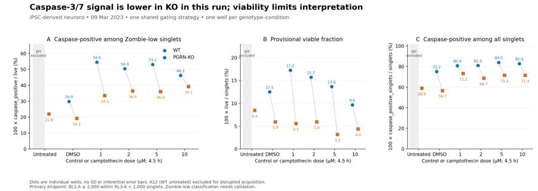
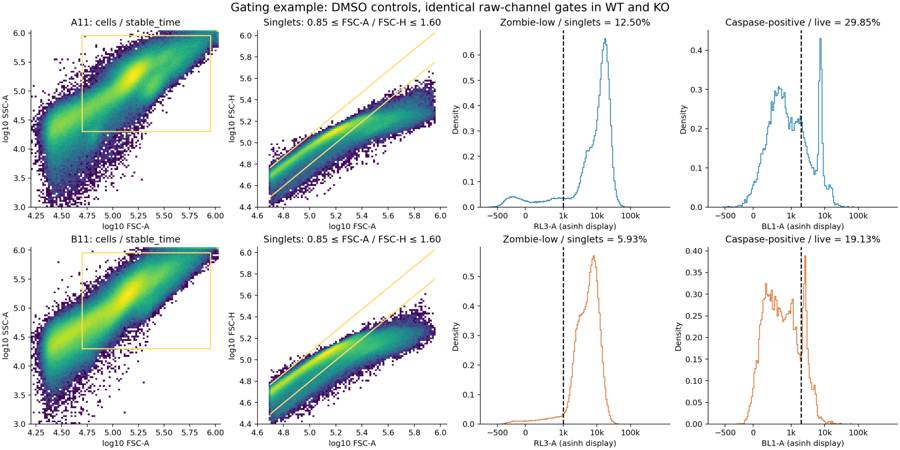
tool call · exec
text(await tools.exec_command({cmd:"python - <<'PY'\nfrom pathlib import Path\np=Path('/task/outputs/make_outputs.py');s=p.read_text().replace('from matplotlib.colors import LogNorm','from matplotlib.colors import LogNorm\\nfrom matplotlib.lines import Line2D');s=s.replace(\"axs[0].legend(loc='upper right',frameon=False,labels=['WT','PGRN-KO'])\", \"axs[0].legend(handles=[Line2D([],[],ls='',marker='o',color=colors['WT'],label='WT'),Line2D([],[],ls='',marker='s',color=colors['KO'],label='PGRN-KO')],loc='upper right',frameon=False)\");s=s.replace('Caspase-3/7 signal is lower in KO in this run; viability limits interpretation','Caspase-3/7 positivity is lower in KO in this run; viability limits interpretation');p.write_text(s)\nPY\npython /task/outputs/make_outputs.py","yield_time_ms":1000,"max_output_tokens":1000}));
text(await tools.write_stdin({session_id:5314,chars:"","yield_time_ms":1000,"max_output_tokens":500}));
tool output
Script completed
Wall time 1.2 seconds
Output:
{"chunk_id":"df01e6","wall_time_seconds":1.00129828,"session_id":15606,"original_token_count":0,"output":""}
{"chunk_id":"9e4cd3","wall_time_seconds":0.00000156,"exit_code":0,"original_token_count":17,"output":"Wrote flags, summaries, answer, main figure and gating/QC figures.\n"}26
agent
The report and required outputs are written. I recommend validating Zombie NIR with a dilution series and known live/dead controls before a rescue study. The KO–WT difference under DMSO survives all 81 tested gate combinations; the 10 µM comparison is sensitive to gate choice. I’m finishing the file checks and confirming that the saved gates reproduce `counts.csv`.
tool call · exec
text(await tools.exec_command({cmd:"cat > /task/outputs/validate_outputs.py <<'PY'\nfrom pathlib import Path\nimport json,re\nimport numpy as np\nimport pandas as pd\nimport flowkit as fk\nfrom PIL import Image\nO=Path('/task/outputs');layout=pd.read_csv('/task/inputs/plate_layout.csv');counts=pd.read_csv(O/'counts.csv');flags=pd.read_csv(O/'flags.csv');summary=pd.read_csv(O/'condition_summary.csv');a=json.loads((O/'answer.json').read_text())\nassert list(counts)==['file','well','population','role','parent','count','pct_of_parent']\nassert list(flags)==['file','well','issue_type','evidence','decision']\nassert list(summary)==['condition','wells','n_wells_used','mean','sd','metric_definition','normalisation_applied']\nassert len(layout)==18 and len(flags)==18\nassert set(flags.file)==set(layout.file)==set(counts.file)\nassert not counts.duplicated(['file','population']).any() and not flags.file.duplicated().any()\nassert set(counts.role)<=set(['cells','singlets','live','marker_positive','other'])\nassert set(flags.issue_type)<=set(['none','clog','ran_dry','too_few_events','saturation','bad_control','mislabel','other'])\nassert set(flags.decision)<=set(['keep','keep_with_note','exclude'])\nassert flags[flags.issue_type!='none'].evidence.notna().all()\nassert flags[flags.issue_type!='none'].evidence.map(lambda x:bool(re.search(r'\\d',x))).all()\nassert np.isfinite(counts['count']).all() and (counts['count']>=0).all() and (counts['count']%1==0).all()\nassert not summary.condition.duplicated().any() and np.isfinite(summary['mean']).all()\nassert (summary.n_wells_used>=1).all() and summary.loc[summary.n_wells_used==1,'sd'].isna().all()\nassert set(a['excluded_wells'])==set(flags.loc[flags.decision=='exclude','well'])\nassert len(a['comparisons'])>=1\nfor x in a['comparisons']:\n assert x['a'] in set(summary.condition) and x['b'] in set(summary.condition)\n assert x['direction'] in ['increase','decrease','no_clear_change'] and x['confidence'] in ['high','medium','low']\n av=summary.set_index('condition').loc[x['a'],'mean'];bv=summary.set_index('condition').loc[x['b'],'mean']\n if x['direction']=='increase':assert bv>av\n if x['direction']=='decrease':assert bv<av\nassert a['overall_answer'].startswith(('yes:','partial:','no:'))\nassert a['assay_verdict'] in ['fit_for_purpose','needs_optimisation','not_fit_for_purpose']\nassert a['next_action'] in ['proceed_as_planned','repeat_unchanged','repeat_with_change','optimise_reagent_or_setting','change_treatment_or_timing','switch_assay','stop']\nassert set(a['next_change'])=={'what','from','to','why'} and all(isinstance(v,str) for v in a['next_change'].values())\nfor x in summary.itertuples():\n wells=x.wells.split(';');assert len(wells)==x.n_wells_used and not set(wells)&set(a['excluded_wells'])\n assert set(wells)<=set(layout.well)\nassert re.findall(r'^## .+$',(O/'report.md').read_text(),re.M)==['## Question','## Methods','## Results','## Conclusion','## Caveats','## Recommendation']\nwith Image.open(O/'figure.png') as im:assert im.format=='PNG' and im.size[0]>500\nst=fk.parse_gating_xml(str(O/'gates.xml'));gate_ids=st.get_gate_ids();gate_names={x[0] for x in gate_ids}\nassert gate_names==set(counts.population)-{'all_events'}\nassert all(re.fullmatch('[A-Za-z][A-Za-z0-9_]*',n) for n in gate_names)\nrows_verified=0\nfor r in layout.itertuples():\n c=counts[counts.file==r.file].set_index('population'); assert len(c)==len(gate_names)+1\n assert set(c.well)=={r.well};assert set(c.index)==gate_names|{'all_events'}\n for role in ['cells','singlets','live','marker_positive']:assert (c.role==role).sum()==1\n assert c.loc['all_events','role']=='other' and c.loc['all_events','parent']=='none' and np.isnan(c.loc['all_events','pct_of_parent'])\n sample=fk.Sample('/task/inputs/raw/'+r.file);res=st.gate_sample(sample)\n assert c.loc['all_events','count']==sample.event_count\n for name,path in gate_ids:\n assert c.loc[name,'count']==res.get_gate_count(name)\n expected_parent='all_events' if path==('root',) else path[-1]\n assert c.loc[name,'parent']==expected_parent\n par_count=c.loc[expected_parent,'count'];expected=100*c.loc[name,'count']/par_count\n assert np.isclose(c.loc[name,'pct_of_parent'],expected,rtol=1e-12,atol=1e-12)\n rows_verified+=len(c)\n print('Verified',r.well,len(c),'rows',flush=True)\nassert len(counts)==rows_verified\nfor name in gate_names:\n for col in ['role','parent']:assert counts[counts.population==name][col].nunique()==1\nvalidation=dict(status='PASS',flowkit_version=fk.__version__,n_raw_files=18,n_populations_including_all_events=len(gate_names)+1,n_counts_rows_verified=rows_verified,n_condition_metric_rows=len(summary),excluded_wells=a['excluded_wells'],gates_reloaded_and_reapplied=True,schemas_and_links_validated=True)\n(O/'validation.json').write_text(json.dumps(validation,indent=2)+'\\n')\nprint(json.dumps(validation,indent=2))\nPY\npython /task/outputs/validate_outputs.py","yield_time_ms":1000,"max_output_tokens":1500}));
text(await tools.write_stdin({session_id:15606,chars:"","yield_time_ms":1000,"max_output_tokens":1000}));
tool output
Script completed
Wall time 1.2 seconds
Output:
{"chunk_id":"d8230d","wall_time_seconds":1.00101157,"session_id":68642,"original_token_count":49,"output":"Verified A2 9 rows\nVerified A4 9 rows\nVerified A6 9 rows\nVerified A7 9 rows\nVerified A8 9 rows\nVerified A9 9 rows\nVerified A10 9 rows\nVerified A11 9 rows\nVerified A12 9 rows\nVerified B2 9 rows\n"}
{"chunk_id":"033383","wall_time_seconds":0.00000206,"exit_code":0,"original_token_count":17,"output":"Wrote flags, summaries, answer, main figure and gating/QC figures.\n"}tool call · exec
for (const p of ["figure.png","acquisition_qc.png","gating_fluorescence.png"]) {const r=await tools.view_image({path:"/task/outputs/"+p});image(r.image_url);}
text(await tools.write_stdin({session_id:68642,chars:"","yield_time_ms":1000,"max_output_tokens":1500}));
text(await tools.exec_command({cmd:"ls -lh /task/outputs && head -5 /task/outputs/counts.csv && head -5 /task/outputs/condition_summary.csv && head -10 /task/outputs/gates.xml","max_output_tokens":2000}));
tool output
Script completed Wall time 0.1 seconds Output:
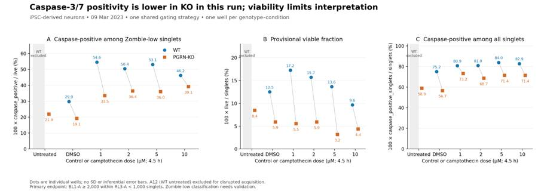
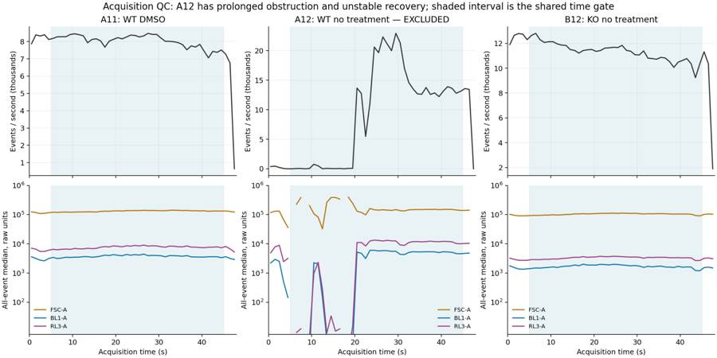
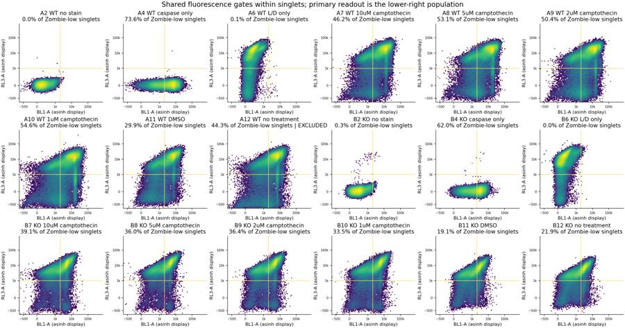
{"chunk_id":"4387c5","wall_time_seconds":0.00000311,"exit_code":0,"original_token_count":114,"output":"Verified B4 9 rows\nVerified B6 9 rows\nVerified B7 9 rows\nVerified B8 9 rows\nVerified B9 9 rows\nVerified B10 9 rows\nVerified B11 9 rows\nVerified B12 9 rows\n{\n \"status\": \"PASS\",\n \"flowkit_version\": \"1.2.3\",\n \"n_raw_files\": 18,\n \"n_populations_including_all_events\": 9,\n \"n_counts_rows_verified\": 162,\n \"n_condition_metric_rows\": 51,\n \"excluded_wells\": [\n \"A12\"\n ],\n \"gates_reloaded_and_reapplied\": true,\n \"schemas_and_links_validated\": true\n}\n"}{"chunk_id":"2c1fb1","wall_time_seconds":0.00000264,"exit_code":0,"original_token_count":955,"output":"total 4.4M\ndrwxr-xr-x 2 root root 4.0K Nov 10 17:16 __pycache__\n-rw-r--r-- 1 root root 235K Nov 10 17:19 acquisition_qc.png\n-rw-r--r-- 1 root root 7.4K Nov 10 17:13 analyse_plate.py\n-rw-r--r-- 1 root root 7.0K Nov 10 17:18 answer.json\n-rw-r--r-- 1 root root 20K Nov 10 17:13 channel_quantiles.csv\n-rw-r--r-- 1 root root 5.1K Nov 10 17:18 condition_summary.csv\n-rw-r--r-- 1 root root 990K Nov 10 17:11 control_diagnostics.png\n-rw-r--r-- 1 root root 1.8K Nov 10 17:11 control_diagnostics.py\n-rw-r--r-- 1 root root 17K Nov 10 17:13 counts.csv\n-rw-r--r-- 1 root root 1.4K Nov 10 17:13 exploration_log.txt\n-rw-r--r-- 1 root root 364K Nov 10 17:13 explore_fluorescence.png\n-rw-r--r-- 1 root root 185K Nov 10 17:13 explore_histograms.png\n-rw-r--r-- 1 root root 3.1K Nov 10 17:13 explore_plate.py\n-rw-r--r-- 1 root root 324K Nov 10 17:13 explore_pulse.png\n-rw-r--r-- 1 root root 458K Nov 10 17:13 explore_scatter.png\n-rw-r--r-- 1 root root 443K Nov 10 17:13 explore_time.png\n-rw-r--r-- 1 root root 56K Nov 10 17:13 fcs_metadata.json\n-rw-r--r-- 1 root root 283K Nov 10 17:18 figure.png\n-rw-r--r-- 1 root root 5.0K Nov 10 17:18 flags.csv\n-rw-r--r-- 1 root root 126K Nov 10 17:13 gate_sensitivity.csv\n-rw-r--r-- 1 root root 14K Nov 10 17:13 gated_time_bins.csv\n-rw-r--r-- 1 root root 3.2K Nov 10 17:13 gates.xml\n-rw-r--r-- 1 root root 418K Nov 10 17:19 gating_fluorescence.png\n-rw-r--r-- 1 root root 336K Nov 10 17:19 gating_strategy.png\n-rw-r--r-- 1 root root 5.7K Nov 10 17:09 initial_qc.csv\n-rw-r--r-- 1 root root 14K Nov 10 17:18 make_outputs.py\n-rw-r--r-- 1 root root 4.9K Nov 10 17:13 provenance.json\n-rw-r--r-- 1 root root 7.6K Nov 10 17:13 qc_metrics.csv\n-rw-r--r-- 1 root root 13K Nov 10 17:18 report.md\n-rw-r--r-- 1 root root 2.2K Nov 10 17:11 tentative_singlet_statistics.csv\n-rw-r--r-- 1 root root 7.3K Nov 10 17:11 threshold_exploration.csv\n-rw-r--r-- 1 root root 59K Nov 10 17:13 time_bins.csv\n-rw-r--r-- 1 root root 4.7K Nov 10 17:19 validate_outputs.py\n-rw-r--r-- 1 root root 299 Nov 10 17:19 validation.json\n-rw-r--r-- 1 root root 3.2K Nov 10 17:13 well_metrics.csv\n-rw-r--r-- 1 root root 13K Nov 10 17:18 write_report.py\nfile,well,population,role,parent,count,pct_of_parent\nCaspase_WT_KO_optimization_caspase_Group_A2.fcs,A2,all_events,other,none,365736,\nCaspase_WT_KO_optimization_caspase_Group_A2.fcs,A2,stable_time,other,all_events,311009,85.03647439683269\nCaspase_WT_KO_optimization_caspase_Group_A2.fcs,A2,cells,cells,stable_time,228693,73.53259873508483\nCaspase_WT_KO_optimization_caspase_Group_A2.fcs,A2,singlets,singlets,cells,169868,74.27774352516255\ncondition,wells,n_wells_used,mean,sd,metric_definition,normalisation_applied\nWT_unstained_control__caspase_live_pct,A2,1,0.0235479731082147,,100 * caspase_positive / live,none\nWT_unstained_control__live_singlets_pct,A2,1,99.9988226152071,,100 * live / singlets,none\nWT_unstained_control__caspase_singlets_pct,A2,1,0.0235476958579602,,100 * caspase_positive_singlets / singlets,none\nWT_caspase_only_control__caspase_live_pct,A4,1,73.59897520769343,,100 * caspase_positive / live,none\n<?xml version='1.0' encoding='UTF-8'?>\n<gating:Gating-ML xmlns:gating=\"http://www.isac-net.org/std/Gating-ML/v2.0/gating\" xmlns:data-type=\"http://www.isac-net.org/std/Gating-ML/v2.0/datatypes\" xmlns:transforms=\"http://www.isac-net.org/std/Gating-ML/v2.0/transformations\">\n <gating:RectangleGate gating:id=\"stable_time\">\n <gating:dimension gating:compensation-ref=\"uncompensated\" gating:min=\"5.0\" gating:max=\"45.0\">\n <data-type:fcs-dimension data-type:name=\"Time\"/>\n </gating:dimension>\n </gating:RectangleGate>\n <gating:RectangleGate gating:id=\"cells\" gating:parent_id=\"stable_time\">\n <gating:dimension gating:compensation-ref=\"uncompensated\" gating:min=\"50000.0\" gating:max=\"900000.0\">\n <data-type:fcs-dimension data-type:name=\"FSC-A\"/>\n"}28
agent
Completed all seven deliverables in `/task/outputs/`: [report](/task/outputs/report.md), [figure](/task/outputs/figure.png), [answer](/task/outputs/answer.json), [gates](/task/outputs/gates.xml), [counts](/task/outputs/counts.csv), [flags](/task/outputs/flags.csv), and [condition summary](/task/outputs/condition_summary.csv).
KO showed **lower caspase positivity** than WT under DMSO: **19.1% versus 29.9%** among Zombie-low singlets. Both genotypes responded to camptothecin. A12 was excluded for disrupted acquisition.
The assay **needs optimisation**: results are provisional because each condition has one well and viability classification is uncertain. Next, titrate Zombie NIR using known live/dead controls.
Reloading the saved gates reproduced all **162 count rows exactly**.